عنوان پایاننامه:Thesis Title:Titolo della Tesi: ابزارهای تشخیصی/پیشآگهی نوین مبتنی بر دادههای AFM و یادگیری عمیق Novel Diagnostic/Prognostic Tools Based on AFM Data and Deep LearningStrumenti Diagnostici/Prognostici Innovativi Basati su Dati AFM e Deep Learning
هدف:Goal:Obiettivo: تشخیص درجه تومور مغزی (مننژیوما) با استفاده از ترکیب دادههای میکروسکوپ نیروی اتمی و تصاویر بافتشناسی Brain tumor (meningioma) grade classification using a combination of Atomic Force Microscopy data and histology images Classificazione del grado del tumore cerebrale (meningioma) mediante la combinazione di dati di Microscopia a Forza Atomica e immagini istologiche
مغز و نخاع شما درون سه لایه محافظ پیچیده شدن که بهشون مننژ (Meninges) میگن. مثل سه لایه بستهبندی حبابی دور یه شیشه ظریف. این سه لایه از بیرون به داخل عبارتند از: Your brain and spinal cord are wrapped inside three protective layers called the meninges. Think of them like three layers of bubble wrap around a delicate glass vase. From outermost to innermost, they are: Il cervello e il midollo spinale sono avvolti da tre strati protettivi chiamati meningi. Immagina tre strati di pluriball attorno a un vaso di vetro delicato. Dall'esterno verso l'interno, sono:
مننژیوما توموری هست که از سلولهای لایه عنکبوتیه (arachnoid cap cells) رشد میکنه. این شایعترین تومور اولیه مغز هست — حدود ۳۰ درصد تمام تومورهای مغزی. معمولاً بین مغز و جمجمه رشد میکنه و مثل یه توپ آهسته بزرگتر میشه و به مغز فشار میآره. Meningioma is a tumor that grows from cells of the arachnoid layer (arachnoid cap cells). It is the most common primary brain tumor — about 30% of all brain tumors. It usually grows between the brain and skull, slowly enlarging like a ball and pressing against the brain. Il meningioma è un tumore che origina dalle cellule dello strato aracnoideo (cellule cap dell'aracnoide). È il tumore cerebrale primario più comune — circa il 30% di tutti i tumori cerebrali. Di solito cresce tra il cervello e il cranio, ingrandendosi lentamente come una palla e comprimendo il cervello.
تصور کنید مغز یه توپ فوتبال هست که توی یه کلاه ایمنی (جمجمه) قرار داره. بین توپ و کلاه یه لایه ابری نرم هست (مننژ). مننژیوما مثل یه دکمهست که روی این لایه ابری رشد میکنه و کمکم توپ رو فشار میده. هر چی بزرگتر بشه، فشار بیشتری به مغز وارد میکنه. Imagine the brain is a soccer ball sitting inside a helmet (skull). Between the ball and the helmet there is a soft cushioning layer (meninges). A meningioma is like a button growing on this cushion layer, slowly pressing against the ball. The bigger it gets, the more pressure it puts on the brain. Immagina che il cervello sia un pallone da calcio all'interno di un casco (cranio). Tra il pallone e il casco c'è uno strato morbido ammortizzante (meningi). Un meningioma è come un bottone che cresce su questo strato, premendo progressivamente contro il pallone. Più cresce, più esercita pressione sul cervello.
مننژیوما زیرنوعهای متعددی داره که بر اساس شکل سلولها زیر میکروسکوپ تشخیص داده میشن: Meningioma has multiple subtypes identified by the shape of cells under a microscope: Il meningioma ha molteplici sottotipi identificati dalla forma delle cellule al microscopio:
سازمان جهانی بهداشت (WHO) مننژیوما رو به سه درجه تقسیم میکنه بر اساس ویژگیهای سلولی (تعداد میتوز، نفوذ به مغز، نکروز): The World Health Organization (WHO) divides meningiomas into three grades based on cellular features (mitotic count, brain invasion, necrosis): L'Organizzazione Mondiale della Sanità (OMS) divide i meningiomi in tre gradi in base alle caratteristiche cellulari (indice mitotico, invasione cerebrale, necrosi):
| درجه WHOWHO GradeGrado WHO | توضیحDescriptionDescrizione | رفتار بالینیClinical BehaviorComportamento Clinico | فراوانیFrequencyFrequenza | بقای ۵ ساله5-Year SurvivalSopravvivenza a 5 Anni |
|---|---|---|---|---|
| Grade 1 | خوشخیم (Benign)BenignBenigno | رشد آهسته، عود کم، اغلب فقط جراحیSlow growth, low recurrence, usually surgery onlyCrescita lenta, bassa recidiva, di solito solo chirurgia | ~80% | >95% |
| Grade 2 | آتیپیک (Atypical)AtypicalAtipico | رشد سریعتر، احتمال عود ۴۰-۵۰٪، ممکنه رادیوتراپی لازم باشهFaster growth, 40-50% recurrence risk, may need radiotherapyCrescita più rapida, rischio di recidiva 40-50%, può richiedere radioterapia | ~15-20% | ~80% |
| Grade 3 | بدخیم (Malignant/Anaplastic)Malignant (Anaplastic)Maligno (Anaplastico) | تهاجمی، عود بالا، نیاز به درمان شدیدAggressive, high recurrence, needs aggressive treatmentAggressivo, alta recidiva, richiede trattamento intensivo | ~1-3% | ~50-60% |
تفاوت درجه مستقیماً روی درمان بیمار تأثیر میذاره. بیمار Grade 1 ممکنه فقط نیاز به جراحی داشته باشه و بعد هر سال یه MRI کنترلی. ولی بیمار Grade 2 احتمالاً بعد از جراحی به رادیوتراپی هم نیاز داره و باید هر ۶ ماه پیگیری بشه. تشخیص زودتر و دقیقتر = درمان بهتر = عمر بیشتر. The grade difference directly impacts patient treatment. A Grade 1 patient may only need surgery and annual MRI follow-up. But a Grade 2 patient likely needs radiotherapy after surgery and must be monitored every 6 months. Earlier and more accurate diagnosis = better treatment = longer survival. La differenza di grado impatta direttamente il trattamento del paziente. Un paziente con Grado 1 potrebbe necessitare solo di chirurgia e controllo MRI annuale. Un paziente con Grado 2 probabilmente necessita anche di radioterapia dopo l'intervento e deve essere monitorato ogni 6 mesi. Diagnosi più precoce e accurata = trattamento migliore = sopravvivenza più lunga.
تصور کنید میخواید بفهمید داخل یه ساندویچ چه لایههایی هست. اگه از بیرون نگاه کنید فقط نون میبینید. ولی اگه یه برش نازک ازش بزنید و از کنار نگاه کنید، همه لایهها رو میبینید: نون، کاهو، پنیر، گوشت. هیستولوژی دقیقاً همین کار رو با بافت بدن میکنه. Imagine you want to know what layers are inside a sandwich. Looking from outside you only see bread. But if you cut a thin slice and look from the side, you see all layers: bread, lettuce, cheese, meat. Histology does exactly this with body tissue. Immagina di voler sapere quali strati ci sono dentro un panino. Guardandolo dall'esterno vedi solo il pane. Ma se tagli una fetta sottile e guardi dal lato, vedi tutti gli strati: pane, lattuga, formaggio, carne. L'istologia fa esattamente questo con il tessuto corporeo.
از لحظه جراحی تا رسیدن به تصویر دیجیتال:From surgery to digital image:Dalla chirurgia all'immagine digitale:
رنگآمیزی H&E استاندارد طلایی پاتولوژی هست. پاتولوژیستها سالها آموزش میبینن تا از روی الگوی بنفش (هستهها) و صورتی (بافت) تشخیص بدن بافت سالمه یا سرطانی. ساختارهای خاص مننژیوما مثل whorls (چرخشهای حلزونی سلولها) و psammoma bodies (رسوبات کلسیمی دایرهای) فقط با H&E قابل مشاهده هستن. H&E staining is the gold standard of pathology. Pathologists train for years to diagnose whether tissue is healthy or cancerous based on the purple (nuclei) and pink (tissue) patterns. Specific meningioma structures like whorls (spiral cell arrangements) and psammoma bodies (circular calcium deposits) are only visible with H&E.La colorazione H&E è lo standard di riferimento in patologia. I patologi si formano per anni per diagnosticare se il tessuto è sano o canceroso in base ai pattern viola (nuclei) e rosa (tessuto). Strutture specifiche del meningioma come i vortici (arrangiamenti cellulari a spirale) e i corpi psammomatosi (depositi calcifici circolari) sono visibili solo con H&E.
تصور کنید یه نابینا میخواد بفهمه سطح یه میز چه شکلی هست. انگشتش رو آهسته روی سطح حرکت میده. از روی بالا و پایین رفتن انگشت میفهمه کجا صاف هست، کجا برجسته هست. از روی مقاومتی که حس میکنه میفهمه کجا سفته و کجا نrm. AFM دقیقاً همین کار رو ولی در مقیاس نانومتر (یکمیلیاردم متر) انجام میده. Imagine a blind person wants to understand the surface of a table. They slowly move their finger across the surface. From how their finger goes up and down, they know where it's flat and where it's bumpy. From the resistance they feel, they know where it's hard and where it's soft. AFM does exactly this but at the nanometer (one-billionth of a meter) scale.Immagina che una persona non vedente voglia capire la superficie di un tavolo. Muove lentamente il dito sulla superficie. Dal su e giù del dito capisce dove è piatta e dove è irregolare. Dalla resistenza che sente capisce dove è dura e dove è morbida. L'AFM fa esattamente questo ma alla scala del nanometro (un miliardesimo di metro).
یه تیغه بسیار نازک و کوچک (معمولاً از سیلیکون یا سیلیکون نیترید) به طول حدود ۱۰۰-۲۰۰ میکرومتر. مثل یه تخته شیرجه در استخر — یه سرش ثابته و سر دیگهاش آزاده و میتونه بالا و پایین بره. در نوک آزاد کنتیلور یه سوزن بسیار تیز (tip) نصب شده با شعاع نوک کمتر از ۱۰ نانومتر — یعنی چند اتم! A very thin, tiny beam (usually made of silicon or silicon nitride) about 100-200 micrometers long. Like a diving board at a swimming pool — one end is fixed and the other end is free and can bounce up and down. At the free end of the cantilever, an extremely sharp tip is mounted with a radius less than 10 nanometers — just a few atoms! Una lamina sottilissima e minuscola (di solito in silicio o nitruro di silicio) lunga circa 100-200 micrometri. Come un trampolino da piscina — un'estremità è fissa e l'altra è libera di oscillare su e giù. All'estremità libera del cantilever è montata una punta acutissima con raggio inferiore a 10 nanometri — solo pochi atomi!
یه پرتو لیزر روی سطح بالای کنتیلور تابیده میشه. وقتی کنتیلور خم بشه (حتی یک نانومتر!)، پرتو لیزر منعکسشده جهتش عوض میشه. مثل وقتی یه آینه کوچک رو کمی کج کنید — نقطه نوری روی دیوار خیلی جابجا میشه. A laser beam shines on the top surface of the cantilever. When the cantilever bends (even by one nanometer!), the reflected laser beam changes direction. Like when you tilt a small mirror slightly — the light spot on the wall moves a lot. Un fascio laser illumina la superficie superiore del cantilever. Quando il cantilever si piega (anche solo di un nanometro!), il fascio laser riflesso cambia direzione. Come quando inclini leggermente uno specchietto — il punto luminoso sulla parete si sposta molto.
یه سنسور نوری ۴قسمتی (quadrant photodiode) هست که موقعیت نقطه لیزر منعکسشده رو اندازه میگیره. اگه نقطه لیزر بره بالا = کنتیلور خم شده بالا = نیروی دافعه (سوزن داره به سطح فشار میآره). اگه نقطه لیزر بره پایین = کنتیلور خم شده پایین = نیروی جاذبه (سوزن داره به سطح چسبیده). اختلاف سیگنال بین بالا و پایین فوتودتکتور = نیروی وارد بر سوزن. A 4-segment light sensor (quadrant photodiode) that measures the position of the reflected laser spot. If the spot goes up = cantilever bent up = repulsive force (tip is pressing against surface). If the spot goes down = cantilever bent down = attractive force (tip is sticking to surface). The signal difference between top and bottom of the photodetector = the force on the tip. Un sensore ottico a 4 segmenti (fotodiodo quadrante) che misura la posizione del punto laser riflesso. Se il punto va su = cantilever piegato verso l'alto = forza repulsiva (la punta preme sulla superficie). Se il punto va giù = cantilever piegato verso il basso = forza attrattiva (la punta aderisce alla superficie). La differenza di segnale tra alto e basso del fotodetettore = la forza sulla punta.
یه دستگاه خیلی دقیق که میتونه سوزن (یا نمونه) رو در سه جهت X، Y و Z با دقت زیر نانومتر حرکت بده. از جنس مواد پیزوالکتریک هست — یعنی وقتی ولتاژ بهش وصل میکنی، شکلش عوض میشه (و برعکس). این اجازه میده سوزن رو با دقت اتمی بالا و پایین ببریم. A very precise device that can move the tip (or the sample) in X, Y, and Z directions with sub-nanometer precision. It's made of piezoelectric materials — meaning when voltage is applied, it changes shape (and vice versa). This allows moving the tip up and down with atomic-level precision. Un dispositivo molto preciso che può muovere la punta (o il campione) nelle direzioni X, Y e Z con precisione sub-nanometrica. È fatto di materiali piezoelettrici — cioè quando si applica una tensione, cambia forma (e viceversa). Questo permette di muovere la punta su e giù con precisione a livello atomico.
پیزواسکنر سوزن رو به سمت نمونه حرکت میده ← سوزن به سطح نمونه نزدیک میشه ← نیروهای بین سوزن و سطح باعث خم شدن کنتیلور میشه ← لیزر این خمش رو تشخیص میده ← فوتودتکتور سیگنال لیزر رو به عدد تبدیل میکنه ← کامپیوتر نیرو و فاصله رو ثبت میکنه ← منحنی نیرو-فاصله تولید میشه. The piezo scanner moves the tip toward the sample → the tip approaches the surface → forces between tip and surface bend the cantilever → the laser detects this bending → the photodetector converts the laser signal to a number → the computer records force and distance → a force-distance curve is produced. Lo scanner piezoelettrico muove la punta verso il campione → la punta si avvicina alla superficie → le forze tra punta e superficie piegano il cantilever → il laser rileva questa flessione → il fotodetettore converte il segnale laser in un numero → il computer registra forza e distanza → viene prodotta una curva forza-distanza.
فرض کنید دو فنر دارید: یکی فنر خودکار (نرم) و یکی فنر ماشین (سخت). اگه یه وزنه ۱ کیلویی روی هر دو بذارید، فنر خودکار خیلی فشرده میشه ولی فنر ماشین تقریباً تکون نمیخوره. ثابت فنر (k) عددی هست که نشون میده فنر چقدر سفته. هر چی k بزرگتر، فنر سختتر. Imagine you have two springs: a pen spring (soft) and a car spring (stiff). If you put a 1 kg weight on each, the pen spring compresses a lot but the car spring barely moves. The spring constant (k) is a number showing how stiff a spring is. The bigger k is, the stiffer the spring. Immagina di avere due molle: una molla di penna (morbida) e una molla di automobile (rigida). Se metti un peso da 1 kg su entrambe, la molla della penna si comprime molto mentre quella dell'auto si sposta appena. La costante di molla (k) è un numero che indica quanto è rigida una molla. Più k è grande, più la molla è rigida.
AFM نیرو رو مستقیماً اندازه نمیگیره! چیزی که واقعاً اندازهگیری میشه خم شدن کنتیلور (d) هست (از روی جابجایی لیزر). بعد با فرمول F = k × d نیرو محاسبه میشه. پس اگه k اشتباه باشه، همه مقادیر نیرو اشتباه محاسبه میشن!
AFM doesn't measure force directly! What it actually measures is the cantilever deflection (d) (from laser displacement). Then force is calculated using F = k × d. So if k is wrong, all force values are incorrectly calculated!
L'AFM non misura la forza direttamente! Ciò che misura davvero è la deflessione del cantilever (d) (dallo spostamento del laser). La forza viene poi calcolata con la formula F = k × d. Quindi se k è sbagliato, tutti i valori di forza sono calcolati in modo errato!
قبل از هر آزمایش، کنتیلور باید کالیبره بشه. رایجترین روش thermal noise method هست: Before each experiment, the cantilever must be calibrated. The most common method is the thermal noise method:Prima di ogni esperimento, il cantilever deve essere calibrato. Il metodo più comune è il metodo del rumore termico:
k_correct / k_recorded تصحیح کردیم.
Problem encountered in our project: Some samples (e.g., 3374A/B) were measured with a cantilever whose real spring constant was 1.586 N/m but the software used a default value (e.g., 0.2 N/m). This means recorded forces were about 8x lower than reality! We corrected this by multiplying forces by the ratio k_correct / k_recorded.
Problema riscontrato nel nostro progetto: Alcuni campioni (es. 3374A/B) sono stati misurati con un cantilever la cui costante di molla reale era 1,586 N/m, ma il software aveva usato un valore predefinito (es. 0,2 N/m). Ciò significa che le forze registrate erano circa 8 volte inferiori alla realtà! Abbiamo corretto questo moltiplicando le forze per il rapporto k_correct / k_recorded.
فرض کنید یه خربزه رو با انگشت فشار میدید تا ببینید رسیده یا نه. اگه خیلی محکم فشار بدید، خربزه له میشه و اطلاعات واقعی سفتیش رو از دست میدید. Setpoint مثل یه «حد فشار» هست که به AFM میگه: «تا اینجا فشار بده و بعد برگرد. بیشتر از این به بافت آسیب میزنه.» Imagine pressing a cantaloupe with your finger to check if it's ripe. If you press too hard, the cantaloupe gets crushed and you lose real information about its firmness. The setpoint is like a "pressure limit" that tells the AFM: "Push up to this point and then retract. More than this will damage the tissue." Immagina di premere un melone con il dito per vedere se è maturo. Se premi troppo forte, il melone si schiaccia e perdi le informazioni reali sulla sua consistenza. Il setpoint è come un "limite di pressione" che dice all'AFM: "Spingi fino a questo punto e poi ritrai. Oltre questo il tessuto verrebbe danneggiato."
Setpoint = ۳۰۰ نانونیوتن (nN). این مقدار توسط آزمایشگاه تعیین شده و بهینهست برای بافت مننژیوما: به اندازه کافی فشار میده تا خواص مکانیکی قابل اندازهگیری باشه، ولی آنقدر زیاد نیست که بافت آسیب ببینه یا رفتار غیرخطی بده. ما منحنیها رو در این نقطه برش میزنیم. Setpoint = 300 nanonewtons (nN). This value was determined by the laboratory and is optimal for meningioma tissue: enough force to measure mechanical properties, but not so much that it damages the tissue or causes nonlinear behavior. We cut the curves at this point. Setpoint = 300 nanonewton (nN). Questo valore è stato determinato dal laboratorio ed è ottimale per il tessuto di meningioma: forza sufficiente per misurare le proprietà meccaniche, ma non così elevata da danneggiare il tessuto o causare comportamento non lineare. Tagliamo le curve in questo punto.
تصور کنید با انگشتتون یه بالش رو فشار میدید و بعد ولش میکنید. اگه یه نمودار بکشید که محور X = فاصله انگشت از سطح بالش و محور Y = نیرویی که حس میکنید باشه، یه «منحنی نیرو-فاصله» دارید! وقتی فشار میدید (approach)، نیرو زیاد میشه. وقتی ول میکنید (retract)، انگشتتون یکم به بالش میچسبه قبل از جدا شدن. Imagine pressing a pillow with your finger and then releasing. If you draw a graph where X-axis = distance of finger from pillow surface and Y-axis = force you feel, you have a "force-distance curve"! When pressing (approach), force increases. When releasing (retract), your finger sticks to the pillow a bit before separating. Immagina di premere un cuscino con il dito e poi lasciarlo andare. Se disegni un grafico con asse X = distanza del dito dalla superficie del cuscino e asse Y = forza che senti, hai una "curva forza-distanza"! Quando premi (avvicinamento), la forza aumenta. Quando rilasci (ritiro), il dito aderisce un po' al cuscino prima di separarsi.
سوزن از بالا به سمت بافت حرکت میکنه. چهار مرحله متمایز:The tip moves downward toward the tissue. Four distinct stages:La punta si muove verso il basso verso il tessuto. Quattro fasi distinte:
سوزن بر میگرده. ولی منحنی برگشت دقیقاً مثل رفت نیست! تفاوت بخاطر: The tip pulls back. But the retract curve isn't exactly the same as approach! The difference is due to: La punta si ritrae. Ma la curva di ritiro non è esattamente uguale a quella di avvicinamento! La differenza è dovuta a:
فاز approach «خالصتر» هست. رفتار الاستیک بافت رو بدون اثرات چسبندگی اندازه میگیره. فاز retract شامل اثرات ویسکوز و چسبندگی هست که تفسیرش پیچیدهتره و noise بیشتری داره. برای مدلهای یادگیری عمیق ما، سیگنال تمیز approach کافی و ارجحتره. The approach phase is "cleaner." It measures the elastic behavior of the tissue without adhesion effects. The retract phase includes viscous and adhesion effects that are harder to interpret and noisier. For our deep learning models, the clean approach signal is sufficient and preferable. La fase di avvicinamento è "più pulita". Misura il comportamento elastico del tessuto senza effetti di adesione. La fase di ritiro include effetti viscosi e di adesione che sono più difficili da interpretare e più rumorosi. Per i nostri modelli di deep learning, il segnale pulito di avvicinamento è sufficiente e preferibile.
تصور کنید یه زمین فوتبال رو به ۱۵ ردیف و ۱۵ ستون تقسیم کردید (۲۲۵ مربع). حالا یه نفر میره وسط هر مربع و با پاش زمین رو فشار میده و سفتی زمین رو یادداشت میکنه. نتیجه یه «نقشه سفتی» هست: مثلاً وسط چمن نرمه ولی کنار خطها سفته. Force Map دقیقاً همینه ولی برای بافت تومور. Imagine dividing a football field into 15 rows and 15 columns (225 squares). Someone goes to the center of each square, presses the ground with their foot, and records the stiffness. The result is a "stiffness map": e.g., the grass in the middle is soft but near the lines it's hard. A Force Map is exactly this but for tumor tissue. Immagina di dividere un campo da calcio in 15 righe e 15 colonne (225 quadrati). Qualcuno va al centro di ogni quadrato, preme il terreno con il piede e registra la rigidità. Il risultato è una "mappa di rigidità": es. l'erba al centro è morbida ma vicino alle linee è dura. Una Force Map è esattamente questo ma per il tessuto tumorale.
مقاومت بافت در برابر فشار. واحدش پاسکال (Pa) هست. بافت نرم مثل مغز ≈ ۱۰۰-۱۰۰۰ Pa، استخوان ≈ ۱۰ گیگاپاسکال. از شیب ناحیه فرورفتن (indentation) محاسبه میشه. هر چی شیب تندتر، بافت سختتر. Tissue's resistance to compression. Measured in Pascals (Pa). Soft tissue like brain ≈ 100-1000 Pa, bone ≈ 10 GPa. Calculated from the slope of the indentation region. Steeper slope = stiffer tissue.Resistenza del tessuto alla compressione. Misurata in Pascal (Pa). Tessuto molle come il cervello ≈ 100-1000 Pa, osso ≈ 10 GPa. Calcolata dalla pendenza della regione di indentazione. Pendenza più ripida = tessuto più rigido.
چقدر بافت به سوزن میچسبه. از حداکثر نیروی منفی در فاز retract اندازهگیری میشه. اطلاعات درباره ترکیب شیمیایی سطح بافت (پروتئینها، چربیها) میده. How much the tissue sticks to the tip. Measured from the maximum negative force during retract. Gives information about the chemical composition of the tissue surface (proteins, lipids).Quanto il tessuto aderisce alla punta. Misurata dalla forza negativa massima durante il ritiro. Fornisce informazioni sulla composizione chimica della superficie del tessuto (proteine, lipidi).
چقدر بافت تحت فشار فرو میره (به نانومتر). بافت نرمتر = تغییر شکل بیشتر. ترکیب تغییر شکل و نیرو نشون میده بافت الاستیکه (مثل فنر — بر میگرده) یا پلاستیکه (مثل خمیر — بر نمیگرده). How much the tissue indents under force (in nanometers). Softer tissue = more deformation. The combination of deformation and force shows whether tissue is elastic (like a spring — bounces back) or plastic (like clay — stays deformed).Quanto il tessuto si indenta sotto la forza (in nanometri). Tessuto più morbido = più deformazione. La combinazione di deformazione e forza mostra se il tessuto è elastico (come una molla — rimbalza) o plastico (come l'argilla — rimane deformato).
سلولهای سرطانی وقتی بدخیمتر میشن، تغییرات ساختاری مهمی میدن: As cancer cells become more malignant, they undergo important structural changes:Man mano che le cellule cancerose diventano più maligne, subiscono importanti cambiamenti strutturali:
نکته مهم: این تفاوتها آنقدر ظریفن که چشم انسان یا حتی میکروسکوپ نوری نمیتونه ببینه. ولی AFM با دقت نانومتر میتونه تشخیص بده — و ما به مدل یادگیری عمیق یاد میدیم این تفاوتها رو از روی منحنیها پیدا کنه. Key point: These differences are so subtle that the human eye or even optical microscopes can't detect them. But AFM with nanometer precision can — and we teach deep learning models to find these differences from the curves.Punto chiave: Queste differenze sono così sottili che l'occhio umano o anche i microscopi ottici non riescono a rilevarle. Ma l'AFM con precisione nanometrica può — e insegniamo ai modelli di deep learning a trovare queste differenze dalle curve.
آمادهسازی نمونه برای AFM با هیستولوژی متفاوته. بافت باید «زندهتر» نگه داشته بشه: Sample preparation for AFM is different from histology. The tissue must be kept more "alive":La preparazione del campione per AFM è diversa dall'istologia. Il tessuto deve essere mantenuto più "vivo":
1 جراحی: نوروسرجن تومور مننژیوما رو از مغز بیمار خارج میکنه 1 Surgery: Neurosurgeon removes the meningioma tumor from the patient's brain1 Chirurgia: Il neurochirurgo rimuove il tumore meningioma dal cervello del paziente
2 تقسیم نمونه: بخشی از بافت فریز میشه (برای AFM)، بخشی در فرمالین (برای هیستولوژی) 2 Sample Division: Part of the tissue is frozen (for AFM), part goes in formalin (for histology)2 Divisione del Campione: Parte del tessuto viene congelata (per AFM), parte va in formalina (per l'istologia)
3 برش و نصب: بافت فریزشده با کرایواستات برش داده و روی لام نصب میشه 3 Sectioning & Mounting: Frozen tissue is cryo-sectioned and mounted on a slide3 Sezionamento e Montaggio: Il tessuto congelato viene criosezionato e montato su un vetrino
4 کالیبراسیون AFM: ثابت فنر کنتیلور اندازهگیری و تأیید میشه 4 AFM Calibration: Cantilever spring constant is measured and verified4 Calibrazione AFM: La costante di molla del cantilever viene misurata e verificata
5 Force Mapping: شبکه ۱۵×۱۵ از منحنیها اندازهگیری میشه (۲۲۵ منحنی در هر نقشه) 5 Force Mapping: A 15x15 grid of curves is measured (225 curves per map)5 Force Mapping: Una griglia 15×15 di curve viene misurata (225 curve per mappa)
6 ذخیره خام: دادهها در فایل HDF5 ذخیره میشه (شامل force, height, segment برای هر منحنی) 6 Raw Storage: Data is saved in HDF5 files (containing force, height, segment for each curve)6 Archiviazione Grezza: I dati vengono salvati in file HDF5 (contenenti force, height, segment per ogni curva)
7 پیشپردازش: استخراج approach → تصحیح ثابت فنر → برش در setpoint → نرمالسازی به ۵۱۲ نقطه 7 Preprocessing: Extract approach → correct spring constant → cut at setpoint → normalize to 512 points7 Pre-elaborazione: Estrai avvicinamento → correggi costante di molla → taglia al setpoint → normalizza a 512 punti
8 آماده برای مدل: هر منحنی = یه آرایه ۵۱۲ عددی بین ۰ و ۱ با لیبل Grade 1 یا Grade 2 8 Model-Ready: Each curve = an array of 512 numbers between 0 and 1 with a Grade 1 or Grade 2 label8 Pronto per il Modello: Ogni curva = un array di 512 numeri tra 0 e 1 con etichetta Grado 1 o Grado 2
1 بافت فرمالینی → 2 قالبگیری پارافینی → 3 برش ۳-۵ میکرومتر → 4 نصب روی لام → 5 رنگآمیزی H&E → 6 اسکن دیجیتال (WSI) → 7 برش به پچهای ۲۲۴×۲۲۴ → 8 فیلتر پچهای خالی → 9 آماده برای مدل بینایی 1 Formalin tissue → 2 Paraffin embedding → 3 3-5 μm sectioning → 4 Mounting on slide → 5 H&E staining → 6 Digital scanning (WSI) → 7 Cutting into 224x224 patches → 8 Filtering empty patches → 9 Ready for vision model1 Formalin tissue → 2 Paraffin embedding → 3 3-5 μm sectioning → 4 Mounting on slide → 5 H&E staining → 6 Digital scanning (WSI) → 7 Cutting into 224x224 patches → 8 Filtering empty patches → 9 Ready for vision model
تصور کن یه نابینا با نوک انگشتش روی یه سطح حرکت میکنه. از روی اینکه انگشتش کجا بالا و پایین میره و چقدر مقاومت حس میکنه، میفهمه سطح چه شکلی هست و چقدر سفته. AFM دقیقاً همین کار رو ولی در مقیاس نانومتر انجام میده. Imagine a blind person running their fingertip over a surface. From how their finger goes up and down and how much resistance they feel, they understand the surface shape and stiffness. AFM does exactly this but at the nanometer scale.Immagina una persona non vedente che scorre la punta del dito su una superficie. Dal modo in cui il dito sale e scende e dalla resistenza che sente, capisce la forma e la rigidità della superficie. L'AFM fa esattamente questo ma alla scala del nanometro.
AFM یه سوزن بسیار ریز داره (کمتر از ۱۰ نانومتر) که روی یه تیر نازک (cantilever) نصبه. وقتی این سوزن به سطح نمونه نزدیک میشه: AFM has an extremely fine tip (less than 10 nm) mounted on a thin beam (cantilever). When this tip approaches the sample surface:L'AFM ha una punta estremamente fine (meno di 10 nm) montata su una lamina sottile (cantilever). Quando questa punta si avvicina alla superficie del campione:
خروجی AFM یه منحنی نیرو-فاصله (Force-Distance Curve) هست: یه نمودار که محور X فاصله سوزن از سطح و محور Y نیروی وارد شده (به نانونیوتن) هست. AFM output is a Force-Distance Curve: a graph where X-axis is tip-surface distance and Y-axis is the applied force (in nanonewtons).L'output dell'AFM è una Curva Forza-Distanza: un grafico in cui l'asse X è la distanza punta-superficie e l'asse Y è la forza applicata (in nanonewton).
بافتهای سرطانی خواص مکانیکی متفاوتی از بافت سالم دارن. تومورهای بدخیمتر (Grade بالاتر) معمولاً سفتتر یا نرمتر از حالت عادی هستن. AFM این تفاوتها رو با دقت نانومتر اندازه میگیره — چیزی که چشم یا میکروسکوپ نوری نمیتونه ببینه. Cancerous tissues have different mechanical properties than healthy tissue. More malignant tumors (higher Grade) are usually stiffer or softer than normal. AFM measures these differences with nanometer precision — something the eye or optical microscope can't see.I tessuti cancerosi hanno proprietà meccaniche diverse dai tessuti sani. I tumori più maligni (Grado superiore) sono generalmente più rigidi o più morbidi del normale. L'AFM misura queste differenze con precisione nanometrica — qualcosa che l'occhio o il microscopio ottico non può vedere.
یه برش نازک از بافت تومور رو روی لام شیشهای میذارن، رنگآمیزی میکنن (معمولاً H&E) و با اسکنر دیجیتال عکس میگیرن. نتیجه یه Whole Slide Image (WSI) هست — یه تصویر عظیم (ممکنه ۱۰۰,۰۰۰ × ۱۰۰,۰۰۰ پیکسل باشه). A thin tissue section is placed on a glass slide, stained (usually H&E), and scanned digitally. The result is a Whole Slide Image (WSI) — a massive image (can be 100,000 x 100,000 pixels).Una sezione tissutale sottile viene posta su un vetrino, colorata (di solito H&E) e scansionata digitalmente. Il risultato è una Whole Slide Image (WSI) — un'immagine enorme (può essere 100.000 × 100.000 pixel).
ما نمیتونیم کل این تصویر رو به مدل بدیم (خیلی بزرگه). پس تصویر رو به پچهای ۲۲۴×۲۲۴ پیکسل تقسیم میکنیم و هر پچ رو جداگانه آنالیز میکنیم. We can't feed the entire image to the model (too large). So we divide it into 224x224 pixel patches and analyze each patch separately.Non possiamo fornire l'intera immagine al modello (troppo grande). Quindi la dividiamo in patch di 224×224 pixel e analizziamo ogni patch separatamente.
مننژیوما شایعترین تومور اولیه مغز هست (حدود ۳۰٪ تومورهای مغزی). از مننژ (پرده دور مغز) منشأ میگیره. Meningioma is the most common primary brain tumor (about 30% of brain tumors). It originates from the meninges (membranes around the brain).Il meningioma è il tumore cerebrale primario più comune (circa il 30% dei tumori cerebrali). Origina dalle meningi (membrane attorno al cervello).
| درجه WHOWHO GradeComportamento | |
|---|---|
| Grade 1 | خوشخیمBenignCrescita lenta, bassa recidiva |
| Grade 2 | آتیپیکAtypicalCrescita più rapida, recidiva più alta |
| Grade 3 | بدخیمMalignantAggressivo, richiede trattamento intensivo |
هدف ما: تفکیک Grade 1 از Grade 2 با استفاده از دادههای AFM + هیستولوژی Our Goal: Distinguishing Grade 1 from Grade 2 using AFM + histology dataIl Nostro Obiettivo: Distinguere il Grado 1 dal Grado 2 usando dati AFM + istologia
یه تابع ریاضی با هزاران پارامتر (وزن) که با دیدن مثالها یاد میگیره الگو پیدا کنه. مثل یه بچه که با دیدن صدها عکس گربه و سگ، یاد میگیره فرقشون رو بفهمه. A mathematical function with thousands of parameters (weights) that learns to find patterns by seeing examples. Like a child who learns to tell cats from dogs by seeing hundreds of pictures.Una funzione matematica con migliaia di parametri (pesi) che impara a trovare pattern osservando esempi. Come un bambino che impara a distinguere gatti da cani vedendo centinaia di immagini.
یه نوع خاص شبکه عصبی که به جای نگاه کردن به کل ورودی یکجا، یه فیلتر کوچک (kernel) رو روی ورودی میکشه. مثل اینکه یه ذرهبین کوچک روی تصویر حرکت کنه و در هر موقعیت ویژگیهای محلی رو ببینه. A special type of neural network that instead of looking at the entire input at once, slides a small filter (kernel) across the input. Like moving a small magnifying glass across an image and seeing local features at each position.Un tipo speciale di rete neurale che, invece di guardare tutto l'input in una volta, scorre un piccolo filtro (kernel) sull'input. Come spostare una piccola lente d'ingrandimento su un'immagine e vedere le caratteristiche locali in ogni posizione.
Transformer مثل یه دانشآموزه که وقتی یه جمله رو میخونه، میتونه بین هر دو کلمهای که هر چقدر هم از هم دور باشن ارتباط برقرار کنه. این برخلاف CNN هست که فقط همسایهها رو میبینه. A Transformer is like a student reading a sentence who can connect any two words no matter how far apart they are. Unlike CNN which only sees neighbors.Un Transformer è come uno studente che legge una frase e può collegare qualsiasi due parole, indipendentemente da quanto siano distanti. A differenza della CNN che vede solo i vicini.
Attention (توجه): مکانیزمی هست که مدل یاد میگیره به کدوم بخشهای ورودی بیشتر توجه کنه. مثل وقتی دارید یه متن رو میخونید و ناخودآگاه روی کلمات مهم بیشتر تمرکز میکنید. Attention: A mechanism where the model learns which parts of the input to focus on. Like unconsciously focusing on important words while reading text.Attenzione: Un meccanismo in cui il modello impara su quali parti dell'input concentrarsi. Come focalizzarsi inconsciamente sulle parole importanti durante la lettura di un testo.
فرض کنید یه نفر ۱۰ سال زبان فرانسه یاد گرفته. حالا میخواد ایتالیایی یاد بگیره. خیلی سریعتر یاد میگیره چون دو زبان شبیه هم هستن. Suppose someone learned French for 10 years. Now they want to learn Italian. They learn much faster because the two languages are similar.Supponi che qualcuno abbia studiato il francese per 10 anni. Ora vuole imparare l'italiano. Impara molto più velocemente perché le due lingue sono simili.
Transfer Learning همینه: مدلی که روی ۱۴ میلیون عکس ImageNet آموزش دیده (ویژگیهای عمومی بصری مثل لبهها و بافتها رو بلده) رو میگیریم و فقط لایه آخرش رو برای کار خودمون تنظیم میکنیم. این خیلی بهتره از آموزش از صفر، مخصوصاً وقتی داده کم داریم (مثل ۱۵۰۰ پچ ما). Transfer Learning is the same: we take a model trained on 14 million ImageNet images (knows general visual features like edges and textures) and only fine-tune the last layer for our task. This is much better than training from scratch, especially with limited data (like our 1500 patches).Il Transfer Learning è lo stesso: prendiamo un modello addestrato su 14 milioni di immagini ImageNet (conosce caratteristiche visive generali come bordi e texture) e facciamo il fine-tuning solo dell'ultimo strato per il nostro compito. Questo è molto meglio che addestrare da zero, specialmente con dati limitati (come le nostre 1500 patch).
وقتی مدل داده آموزشی رو حفظ میکنه بجای اینکه الگو یاد بگیره. مثل دانشآموزی که جواب تستهای قبلی رو حفظ کنه ولی سوال جدید رو بلد نباشه. When the model memorizes training data instead of learning patterns. Like a student who memorizes previous test answers but can't solve new questions.Quando il modello memorizza i dati di addestramento invece di apprendere pattern. Come uno studente che memorizza le risposte dei test precedenti ma non riesce a risolvere nuove domande.
علائم: دقت Training خیلی بالا (۹۹٪) ولی دقت Validation پایین (۵۰٪) Symptoms: Training accuracy very high (99%) but Validation accuracy low (50%)Sintomi: Accuratezza di Training molto alta (99%) ma Validation bassa (50%)
راهحلها: Early Stopping، Dropout، داده بیشتر Solutions: Early Stopping, Dropout, more dataSoluzioni: Early Stopping, Dropout, più dati
۲۳ نمونه بافتی مننژیوما از ۱۲ بیمار (هر بیمار ممکنه ۱ یا ۲ نمونه داده باشه: A و B). 23 meningioma tissue samples from 12 patients (each patient may have 1 or 2 samples: A and B).23 campioni di tessuto di meningioma da 12 pazienti (ogni paziente può avere 1 o 2 campioni: A e B).
| ویژگیFeatureValore |
|---|
| تعداد نمونهها (samples)Number of samples23 |
| تعداد کل منحنیهای AFMTotal AFM curves142,347 |
| Grade 1 (خوشخیم)Grade 1 (Benign)14 samples (61%) |
| Grade 2 (آتیپیک)Grade 2 (Atypical)9 samples (39%) |
| نمونههایی که هیستولوژی هم دارنSamples with histology3 samples (1347, 2543, 3464) |
| تعداد پچ هیستولوژیHistology patches1,500 (500 patches per slide) |
در یادگیری عمیق معمولاً هزاران یا میلیونها نمونه لازمه. ما ۲۳ نمونه بیمار داریم ولی هر نمونه هزاران منحنی AFM داره. مشکل اینجاست که منحنیهای یک بیمار خیلی شبیه هم هستن — پس «۱۴۲ هزار منحنی» در واقع فقط «۲۳ بیمار متفاوت» هست. Deep learning typically needs thousands or millions of samples. We have 23 patient samples, but each sample has thousands of AFM curves. The problem is that curves from one patient are very similar — so "142K curves" is really just "23 different patients."Il deep learning tipicamente richiede migliaia o milioni di campioni. Abbiamo 23 campioni di pazienti, ma ogni campione ha migliaia di curve AFM. Il problema è che le curve di un paziente sono molto simili — quindi "142K curve" sono in realtà solo "23 pazienti diversi".
هر منحنی AFM یه آرایه ۵۱۲ عددی هست. مثل یه سیگنال صوتی ولی به جای صدا، نیروی مکانیکی هست. Each AFM curve is an array of 512 numbers. Like an audio signal but instead of sound, it's mechanical force.Ogni curva AFM è un array di 512 numeri. Come un segnale audio ma invece del suono, è forza meccanica.
# یه منحنی AFM بعد از پیشپردازش / An AFM curve after preprocessing curve = [0.0, 0.0, 0.001, 0.003, 0.01, ..., 0.89, 0.95, 1.0] # ^start: tip far from surface ^end: tip pressing len(curve) # = 512 points
هر پچ یه تصویر رنگی ۲۲۴×۲۲۴ پیکسل هست. سه کانال رنگی RGB داره. Each patch is a 224x224 pixel color image with three RGB color channels.Ogni patch è un'immagine a colori di 224×224 pixel con tre canali di colore RGB.
# یه پچ هیستولوژی / A histology patch patch.shape = (3, 224, 224) # 3 = color channels (Red, Green, Blue) # 224x224 = image size
فایل:File:File: src/preprocessing/afm_preprocess.py
1 خواندن فایل HDF5: هر فایل خام شامل ۲۲۵ منحنی نیرو هست 1 Reading HDF5 File: Each raw file contains 225 force curves1 Lettura del File HDF5: Ogni file grezzo contiene 225 curve di forza
# هر فایل .h5 یه "نقشه" (map) از ۲۲۵ نقطه اندازهگیری # Each .h5 file is a "map" of 225 measurement points with h5py.File(file_path, "r") as f: for key in f.keys(): force = f[key]["force"][:] height = f[key]["height (measured)"][:] segment = f[key]["segment"][:]
2 استخراج بخش Approach: فقط قسمت نزدیکشدن سوزن به سطح رو نگه میداریم (segment == 0) 2 Extract Approach: Keep only the approach segment (segment == 0)2 Estrai Avvicinamento: Mantieni solo il segmento di avvicinamento (segment == 0)
بخش approach «خالصتر» هست. وقتی سوزن داره به سطح نزدیک میشه، خواص الاستیک بافت رو اندازه میگیره. بخش retract (برگشت) شامل اثرات چسبندگی و هیسترزیس هست که تفسیرش پیچیدهتره. The approach part is "cleaner." When the tip approaches, it measures elastic tissue properties. The retract part includes adhesion and hysteresis effects that are harder to interpret.La fase di avvicinamento è "più pulita". Quando la punta si avvicina, misura le proprietà elastiche del tessuto. La fase di ritiro include effetti di adesione e isteresi che sono più difficili da interpretare.
3 تصحیح ثابت فنر: بعضی نمونهها با cantileverهایی اندازهگیری شدن که کالیبراسیون متفاوتی داشتن 3 Spring Constant Correction: Some samples were measured with cantilevers that had different calibrations3 Correzione della Costante di Molla: Alcuni campioni sono stati misurati con cantilever con calibrazioni diverse
# Correction: real force = recorded force × spring constant ratio F_correct = F_recorded × (k_correct / k_recorded) # e.g., for sample 3374A: # real spring constant = 1.586 N/m
4 برش در Setpoint: منحنیها رو تا ۳۰۰ نانونیوتن برش میزنیم 4 Cut at Setpoint: Curves are truncated at 300 nanonewtons4 Taglio al Setpoint: Le curve vengono troncate a 300 nanonewton
Setpoint مقدار حداکثر نیرویی هست که سوزن به بافت وارد میکنه. بالاتر از این مقدار، بافت ممکنه آسیب ببینه و دادهها غیرقابل اعتماد بشن. ۳۰۰ nN مقدار استانداردی هست که آزمایشگاه تنظیم کرده. Setpoint is the maximum force the tip applies to tissue. Above this, tissue may be damaged and data unreliable. 300 nN is the standard value set by the laboratory.Il Setpoint è la forza massima che la punta applica al tessuto. Al di sopra di questo valore, il tessuto potrebbe essere danneggiato e i dati inaffidabili. 300 nN è il valore standard impostato dal laboratorio.
5 نرمالسازی به طول ثابت ۵۱۲: 5 Normalize to Fixed Length 512:5 Normalizza a Lunghezza Fissa 512:
def normalize_to_fixed_length(force): # Step 1: baseline correction f = force - force.min() # Step 2: scale to [0, 1] f = f / f.max() # Step 3: resample to 512 points x_src = np.linspace(0, 1, len(f)) x_dst = np.linspace(0, 1, 512) return np.interp(x_dst, x_src, f)
شبکه عصبی ورودی با اندازه ثابت لازم داره. منحنیهای خام طولهای متفاوتی دارن (مثلاً ۳۰۰ تا ۲۰۰۰ نقطه). با resample کردن به ۵۱۲، همه منحنیها یه اندازه میشن. ۵۱۲ = ۲⁹ هست و برای عملیاتهای CNN و Transformer بهینهست. Neural networks need fixed-size input. Raw curves have varying lengths (e.g., 300 to 2000 points). By resampling to 512, all curves become the same size. 512 = 2^9 and is optimal for CNN and Transformer operations.Le reti neurali richiedono input di dimensione fissa. Le curve grezze hanno lunghezze variabili (es. da 300 a 2000 punti). Ricampionando a 512, tutte le curve diventano della stessa dimensione. 512 = 2⁹ ed è ottimale per le operazioni CNN e Transformer.
فایل:File:File: src/preprocessing/histology_preprocess.py
فایل:File:File: src/models/afm_encoders.py
فرض کنید سه نفر دارن یه آهنگ گوش میدن: یکی فقط به ضربات طبل توجه میکنه (جزئیات ریز)، یکی به ملودی (الگوی میانی)، و یکی به ریتم کلی (شکل عمومی). هر سه نظرشون رو ترکیب میکنن تا بگن آهنگ شاد هست یا غمگین. Imagine three people listening to a song: one focuses on drum beats (fine details), one on melody (medium patterns), one on overall rhythm (general shape). They combine their opinions to say whether the song is happy or sad.Immagina tre persone che ascoltano una canzone: una si concentra sui colpi di batteria (dettagli fini), una sulla melodia (pattern medi), una sul ritmo generale (forma generale). Combinano le loro opinioni per dire se la canzone è allegra o triste.
TemporalCNN سه شاخه موازی داره که همزمان منحنی رو پردازش میکنن: TemporalCNN has three parallel branches that process the curve simultaneously:Il TemporalCNN ha tre rami paralleli che elaborano la curva simultaneamente:
# Branch 1: fine details (kernel = 3 points) branch_small = Conv1d(kernel_size=3) # Branch 2: medium patterns (kernel = 7 points) branch_medium = Conv1d(kernel_size=7) # Branch 3: overall shape (kernel = 15 points) branch_large = Conv1d(kernel_size=15) # Outputs concatenated combined = concat(branch_small, branch_medium, branch_large) # → 256-dimensional embedding embedding = Linear(combined) → 256 dimensions
در کد واقعی:In actual code:Nel codice effettivo:
class TemporalCNN(nn.Module): def __init__(self): # Three parallel branches with different kernels self.branch_small = Conv1d(1, 32, kernel_size=3) → Conv1d(32, 64, kernel_size=3) self.branch_medium = Conv1d(1, 32, kernel_size=7) → Conv1d(32, 64, kernel_size=7) self.branch_large = Conv1d(1, 32, kernel_size=15) → Conv1d(32, 64, kernel_size=15) # 3 branches × 64 channels × 32 points = 6144 self.projection = Linear(6144, 256) def forward(self, x): # x = (batch, 512) b1 = self.branch_small(x) b2 = self.branch_medium(x) b3 = self.branch_large(x) combined = cat([b1, b2, b3]) return self.projection(combined) # → (batch, 256)
فایل:File:File: src/models/afm_encoders.py
فرض کنید ۳۲ نفر هر کدوم یه تکه از یه پازل رو دارن. در CNN هر نفر فقط با همسایههاش حرف میزنه. ولی در Transformer هر نفر میتونه با همه ۳۱ نفر دیگه همزمان صحبت کنه و بفهمه تکهاش با کجاها ارتباط داره. Imagine 32 people each holding a puzzle piece. In CNN each person only talks to neighbors. But in Transformer each person can talk to all 31 others simultaneously to understand how their piece connects.Immagina 32 persone ognuna con un pezzo di puzzle. Nella CNN ogni persona parla solo con i vicini. Ma nel Transformer ogni persona può parlare con tutte le altre 31 simultaneamente per capire come il suo pezzo si collega.
# Step 1: Split 512-point curve into 32 segments of 16 points curve = [............512 points............] ↓ tokens = [tok1|tok2|tok3|...|tok32] # each token = 16 points # Step 2: Add CLS token (special summary token) tokens = [CLS|tok1|tok2|...|tok32] # 33 tokens # Step 3: Add Positional Encoding # (so model knows position of each token in the curve) # Step 4: Self-Attention (3 layers, 4 heads each) # Each token "attends" to all other tokens # Step 5: CLS token output = summary of entire curve embedding = CLS_output → Linear → 256 dimensions
یه توکن مصنوعی که اول دنباله اضافه میشه. کارش اینه که بعد از چند لایه attention، اطلاعات همه توکنها رو در خودش جمع کنه. آخر سر فقط خروجی همین یه توکن رو به عنوان «خلاصه کل منحنی» به classifier میدیم. این تکنیک از مقاله BERT (گوگل، ۲۰۱۸) اومده. An artificial token added to the start of the sequence. Its job is to aggregate information from all other tokens through attention layers. At the end, only this single token's output serves as the "summary of the entire curve" for the classifier. This technique comes from the BERT paper (Google, 2018).Un token artificiale aggiunto all'inizio della sequenza. Il suo compito è aggregare le informazioni da tutti gli altri token attraverso i layer di attenzione. Alla fine, solo l'output di questo singolo token funge da "sommario dell'intera curva" per il classificatore. Questa tecnica proviene dall'articolo BERT (Google, 2018).
Transformer ذاتاً نمیدونه ترتیب توکنها چیه (برخلاف CNN که فیلتر رو به ترتیب میکشه). Positional Encoding یه بردار منحصربهفرد به هر موقعیت اضافه میکنه تا مدل بفهمه مثلاً توکن ۵ قبل از توکن ۲۰ هست. از توابع sin و cos استفاده میکنه. Transformers inherently don't know token order (unlike CNN which slides the filter sequentially). Positional Encoding adds a unique vector to each position so the model knows token 5 comes before token 20. It uses sin and cos functions.I Transformer non conoscono intrinsecamente l'ordine dei token (a differenza della CNN che scorre il filtro sequenzialmente). Il Positional Encoding aggiunge un vettore unico a ogni posizione in modo che il modello sappia che il token 5 viene prima del token 20. Utilizza funzioni seno e coseno.
| ویژگیFeatureCaratteristica | TemporalCNN | Transformer |
|---|---|---|
| نوع نگاهView TypeTipo di Vista | محلی (local patterns)Local (local patterns)Locale (pattern locali) | جهانی (همه با همه)Global (all-to-all)Globale (tutti con tutti) |
| مزیتStrengthPunto di Forza | سریع، با داده کم هم کار میکنهFast, works with less dataVeloce, funziona con meno dati | روابط بلندمدت در منحنی رو میبینهSees long-range relationships in the curveVede relazioni a lungo raggio nella curva |
| ضعفWeaknessPunto Debole | دید محدود به پنجره فیلترLimited receptive fieldCampo recettivo limitato | به داده زیاد نیاز دارهNeeds lots of dataRichiede molti dati |
| نتیجه ماOur ResultNostro Risultato | 74.5% | 65.6% |
| کجای منحنی نگاه میکنهCurve Focus AreaZona di Interesse nella Curva | ابتدا و وسط (نقطه تماس)Beginning & middle (contact point region)Inizio e metà (zona del punto di contatto) | انتها (عمق نفوذ بالا)End (deep indentation region)Fine (zona di indentazione profonda) |
فایل:File:File: src/models/abmil.py | experiments/run_abmil_loso.py
در CNN و Transformer، مدل هر منحنی رو جداگانه دستهبندی میکنه. بعد با رأیگیری اکثریت (majority vote) تصمیم نهایی برای بیمار گرفته میشه. این رویکرد یه ضعف اساسی داره: مدل برای دقت بیمار آموزش نمیبینه، بلکه برای دقت منحنی آموزش میبینه. ABMIL این مشکل رو از ریشه حل میکنه — آموزش مستقیم روی label بیمار. In CNN and Transformer, the model classifies each curve independently. A final patient-level decision is then made by majority vote. This has a fundamental weakness: the model is not trained for patient accuracy, only curve accuracy. ABMIL solves this at the root — training directly on patient labels.In CNN e Transformer, il modello classifica ogni curva in modo indipendente. La decisione finale a livello paziente viene poi presa tramite voto di maggioranza. Questo ha una debolezza fondamentale: il modello non è addestrato per l'accuratezza del paziente, solo per quella delle curve. ABMIL risolve questo alla radice — addestrando direttamente sulle etichette dei pazienti.
یه پزشک متخصص ۶۰۰۰ آزمایش مختلف از یه بیمار داره. نه همه آزمایشها به یک اندازه مهمن. پزشک یاد میگیره کدوم آزمایشها بیشتر میتونن درجه بیماری رو نشون بدن — و بقیه رو کمتر وزن میده. این دقیقاً کاری هست که Attention شبکه انجام میده. A specialist doctor has 6,000 different test results from one patient. Not all tests are equally informative. The doctor learns which tests best reveal the disease grade — and weights the others less. This is exactly what the attention network does.Un medico specialista ha 6.000 diversi risultati di test da un paziente. Non tutti i test sono ugualmente informativi. Il medico impara quali test rivelano meglio il grado della malattia — e pesa meno gli altri. È esattamente quello che fa la rete di attenzione.
معماری دو مرحلهای: Two-stage architecture:Architettura a due stadi:
# Stage 1: CNN feature extractor trained on curve labels for curve in all_training_curves: embedding = TemporalCNN(curve) # → 256-d vector loss = FocalLoss(embedding, curve_label) # Stage 2: Freeze CNN, train Gated Attention on patient label for patient in all_training_patients: embeddings = [CNN(curve) for curve in patient.curves] # N × 256 # Gated attention (Ilse et al., ICML 2018) gate = tanh(V × H) * sigmoid(U × H) weights = softmax(w × gate) # N weights summing to 1 bag_embedding = weights @ embeddings # single 256-d patient vector logits = classifier(bag_embedding) loss = CrossEntropyLoss(logits, patient_label)
اگه CNN رو از صفر داخل ABMIL آموزش بدیم، با ۲۲ بیمار training داریم. این خیلی کمه برای آموزش یه feature extractor قوی و نتیجه class collapse میده (مدل همه چیز رو یه کلاس میگه). Stage 1 این مشکل رو حل میکنه: CNN با ۱۳۰هزار منحنی labelدار آموزش میبینه و discriminative features یاد میگیره. بعد Stage 2 فقط یاد میگیره کدوم curves برای تشخیص بیمار مهمتر هستن. If we train the CNN from scratch inside ABMIL, we only have 22 training bags. This is too few for a strong feature extractor and causes class collapse (model predicts only one class). Stage 1 solves this: the CNN is trained on 130,000 labeled curves and learns discriminative features. Then Stage 2 only learns which curves are most important for patient-level diagnosis.Se addestrassimo la CNN da zero all'interno di ABMIL, avremmo solo 22 bag di addestramento. È troppo poco per un feature extractor robusto e causa class collapse (il modello predice solo una classe). Lo Stadio 1 risolve questo: la CNN è addestrata su 130.000 curve con etichetta e impara feature discriminative. Poi lo Stadio 2 impara solo quali curve sono più importanti per la diagnosi del paziente.
فایل:File:File: src/models/fusion_models.py
وقتی هم AFM و هم تصویر هیستولوژی داریم، باید اطلاعات هر دو رو ترکیب کنیم. سه روش پیادهسازی شده: When we have both AFM and histology images, we must combine information from both. Three methods implemented:Quando abbiamo sia dati AFM sia immagini istologiche, dobbiamo combinare le informazioni di entrambi. Tre metodi implementati:
دو دکتر جداگانه یه بیمار رو معاینه میکنن. یکی فقط نتایج AFM رو میبینه و نظرش رو میده، یکی فقط تصویر هیستولوژی رو. آخر سر میانگین نظرشون رو میگیریم. Two doctors independently examine a patient. One sees only AFM results, the other only histology images. At the end, we average their opinions.Due medici esaminano indipendentemente un paziente. Uno vede solo i risultati AFM, l'altro solo le immagini istologiche. Alla fine, facciamo la media delle loro opinioni.
logits = (afm_branch_prediction + image_branch_prediction) / 2
دو دکتر اول همه اطلاعاتشون رو روی میز میذارن و بعد با هم تصمیم میگیرن. Two doctors first put all their information on the table and then make a decision together.Due medici mettono prima tutte le loro informazioni sul tavolo e poi prendono una decisione insieme.
combined = concat(afm_embedding, image_embedding) # 256 + 256 = 512
logits = classifier(combined)
یه سیستم هوشمند یاد میگیره کِی بیشتر به AFM گوش بده و کِی بیشتر به تصویر. مثلاً اگه تصویر تار باشه، بیشتر به AFM اعتماد کنه. A smart system learns when to listen more to AFM and when to the image. For example, if the image is blurry, trust AFM more.Un sistema intelligente impara quando ascoltare di più l'AFM e quando l'immagine. Per esempio, se l'immagine è sfocata, si fida di più dell'AFM.
# A small network determines the weight of each modality gate = softmax(Linear(concat(afm_emb, img_emb))) # gate = [0.7, 0.3] means 70% AFM and 30% image logits = gate[0]*afm_emb + gate[1]*img_emb
فایل:File:File: src/models/hybrid_model.py
بجای اینکه دو مدل مستقل تصمیم بگیرن، اجازه بدیم هر modality به اطلاعات دیگری نگاه کنه. مثلاً ناحیهای از منحنی AFM که سختی بالا نشون میده، بتونه ببینه آیا در تصویر هیستولوژی هم اون ناحیه ساختار متفاوتی داره یا نه. Instead of two independent models deciding, let each modality look at the other's information. For example, an AFM curve region showing high stiffness can check whether the histology image also shows different structure in that area.Invece di due modelli indipendenti che decidono, lasciamo che ogni modalità osservi le informazioni dell'altra. Per esempio, una regione della curva AFM che mostra alta rigidità può verificare se l'immagine istologica mostra anche strutture diverse in quell'area.
# 1. AFM → 32 tokens afm_tokens = AFM_Encoder(curve) # (batch, 32, 128) # 2. Image → 49 tokens (7×7 ResNet50 feature map) img_tokens = Image_Encoder(patch) # (batch, 49, 128) # 3. Cross-attention: AFM looks at the image afm_attended = Attention(query=afm_tokens, key=img_tokens, value=img_tokens) # 4. Cross-attention: Image looks at AFM img_attended = Attention(query=img_tokens, key=afm_tokens, value=afm_tokens) # 5. Gated Fusion: smart combination fused = GatedFusion(afm_attended.mean(), img_attended.mean()) # 6. Final classification logits = Classifier(fused) # → [0.3, 0.7] = Grade 2
فکر کن داری توی کتابخانه دنبال یه موضوع میگردی:Think of searching for a topic in a library:Pensa a cercare un argomento in una biblioteca:
Attention score مشخص میکنه Query با کدوم Keyها match داره و از Valueهای متناظر اطلاعات میگیره. Attention score determines which Keys match the Query and extracts information from corresponding Values.L'Attention score determina quali Key corrispondono alla Query ed estrae informazioni dai Value corrispondenti.
| پارامترParameterSpiegazione Semplice | ||
|---|---|---|
| Batch Size | 128 | در هر قدم، ۱۲۸ منحنی رو پردازش میکنهProcesses 128 curves per stepElabora 128 curve per passo |
| Max Epochs | 20 | حداکثر ۲۰ بار کل داده رو میبینهSees all data at most 20 timesVede tutti i dati al massimo 20 volte |
| Learning Rate | 0.0001 | اندازه قدمهای بهینهسازی (کوچک = دقیق ولی کند)Optimization step size (small = precise but slow)Dimensione del passo di ottimizzazione (piccolo = preciso ma lento) |
| Optimizer | Adam | الگوریتم بهینهسازی — هوشمندانه قدمها رو تنظیم میکنهOptimization algorithm — smartly adjusts stepsAlgoritmo di ottimizzazione — regola i passi in modo intelligente |
| Early Stopping | patience=5 | اگه ۵ epoch بهتر نشد، متوقف شوStop if no improvement for 5 epochsFerma se non migliora per 5 epoche |
| Loss | Focal Loss (γ=2) | تابع خطا مخصوص کلاسهای نامتوازنLoss function for imbalanced classesFunzione di perdita per classi sbilanciate |
| Scheduler | Cosine Annealing | Learning rate رو تدریجاً کم میکنهGradually reduces learning rateRiduce gradualmente il learning rate |
فایل:File:File: src/training/loss.py
فرض کنید در کلاس ۱۰۰ نفره، ۸۰ نفر پسر و ۲۰ نفر دختر هستن. اگه مدل همیشه بگه «پسر»، دقتش ۸۰٪ میشه! ولی هیچ دختری رو شناسایی نکرده. Cross-Entropy معمولی این مدل «تنبل» رو خیلی تنبیه نمیکنه. Imagine a class of 100: 80 boys and 20 girls. If the model always says "boy", it gets 80% accuracy! But it hasn't identified any girls. Standard Cross-Entropy doesn't punish this "lazy" model much.Immagina una classe di 100: 80 maschi e 20 femmine. Se il modello dice sempre "maschio", ottiene l'80% di accuratezza! Ma non ha identificato nessuna femmina. La Cross-Entropy standard non punisce molto questo modello "pigro".
Focal Loss میگه: «وقتی مدل با اطمینان ۹۵٪ درست پیشبینی میکنه (نمونههای آسان)، وزن اون نمونه رو خیلی کم کن. تمام تمرکز روی نمونههایی بذار که مدل گیج میشه (نمونههای سخت).» Focal Loss says: "When the model predicts correctly with 95% confidence (easy samples), greatly reduce that sample's weight. Focus entirely on samples where the model is confused (hard samples)."La Focal Loss dice: "Quando il modello predice correttamente con il 95% di confidenza (campioni facili), riduci molto il peso di quel campione. Concentra tutta l'attenzione sui campioni in cui il modello è confuso (campioni difficili)."
# Standard Cross-Entropy: loss = -log(p) # Focal Loss: loss = -(1-p)^γ × log(p) # ^^^^^^^ this factor down-weights easy samples (high p) # γ = 2: if model is 95% sure → factor = (0.05)² = 0.0025 (nearly zero!) # γ = 2: if model is 50% sure → factor = (0.50)² = 0.25 (still significant)
مثل رانندگی: اول با سرعت بالا حرکت میکنی (learning rate بزرگ = قدمهای بزرگ) تا سریع به نزدیکی مقصد برسی. بعد آهستهآهسته سرعت رو کم میکنی (learning rate کوچک = قدمهای ریز) تا دقیقاً در مقصد پارک کنی. Like driving: start fast (large learning rate = big steps) to quickly get near the destination. Then gradually slow down (small learning rate = tiny steps) to park precisely at the destination.Come guidare: inizia veloce (learning rate grande = passi grandi) per avvicinarti rapidamente alla destinazione. Poi rallenta gradualmente (learning rate piccolo = passi piccoli) per parcheggiare con precisione alla destinazione.
# Learning rate starts at 0.0001 and decreases following a cosine curve lr(t) = lr_min + 0.5 × (lr_max - lr_min) × (1 + cos(π × t / T)) # epoch 0: lr = 0.0001 (maximum) # epoch 10: lr = 0.00005 (half) # epoch 20: lr ≈ 0 (minimum)
مثل پختن کیک: وقتی کیک رو توی فر میذاری هر ۵ دقیقه چک میکنی. اگه ۵ بار پشت سر هم چک کنی و هیچ تغییری نبینی، کیک آمادست و ادامه دادن فقط میسوزوندش (overfitting). Like baking a cake: you check every 5 minutes. If you check 5 times in a row and see no change, the cake is done and continuing will only burn it (overfitting).Come cuocere una torta: controlli ogni 5 minuti. Se controlli 5 volte di seguito e non vedi cambiamenti, la torta è pronta e continuare la brucerà solo (overfitting).
# patience = 5 → if validation loss doesn't improve for 5 epochs, STOP if val_loss < best_val_loss: best_val_loss = val_loss save_checkpoint() # save best model patience_counter = 0 else: patience_counter += 1 if patience_counter >= 5: break # stop!
فایل:File:File: experiments/run_kfold.py
ایده: هر بار یه بیمار رو کنار بذار (تست)، با بقیه آموزش بده، ببین اون بیمار جدید رو درست تشخیص میدی؟ این کار رو برای همه بیماران تکرار کن. Idea: Each time leave one patient out (test), train with the rest, see if you can correctly diagnose that new patient. Repeat for all patients.Idea: Ogni volta escludi un paziente (test), addestra con gli altri, verifica se riesci a diagnosticare correttamente quel nuovo paziente. Ripeti per tutti i pazienti.
# Assume: 23 samples results = [] for i in range(23): test_sample = samples[i] # ← this patient is tested train_samples = samples[:i] + samples[i+1:] # ← rest for training model = train(train_samples) # train the model accuracy = test(model, test_sample) # test on unseen patient results.append(accuracy) mean_accuracy = average(results) # average of 23 folds
مشکل اصلی: Data Leakage (نشت داده) Main Problem: Data LeakageProblema Principale: Data Leakage
هر بیمار ممکنه ۱۰,۰۰۰ منحنی AFM داشته باشه. اگه منحنیها رو تصادفی بین train و test تقسیم کنیم، منحنیهای یه بیمار هم در train و هم در test میفته. مدل بجای یادگیری «الگوی Grade 2»، الگوی خاص «بیمار X» رو حفظ میکنه و در تست همون بیمار دقت بالا میده. Each patient may have 10,000 AFM curves. If we randomly split curves between train and test, one patient's curves end up in both. The model memorizes "Patient X's pattern" instead of learning "Grade 2 pattern" and gets high accuracy on the same patient's test curves.Ogni paziente può avere 10.000 curve AFM. Se dividiamo casualmente le curve tra train e test, le curve di un paziente finiscono in entrambi. Il modello memorizza il "pattern del Paziente X" invece di imparare il "pattern del Grado 2" e ottiene alta accuratezza sulle curve di test dello stesso paziente.
LOSO تضمین میکنه هیچ منحنیای از بیمار تست در training نباشه. این سختترین ولی صادقانهترین ارزیابی هست. LOSO guarantees no curves from the test patient are in training. This is the toughest but most honest evaluation.LOSO garantisce che nessuna curva del paziente di test sia nel training. Questa è la valutazione più difficile ma più onesta.
k-Fold داده رو تصادفی به k بخش تقسیم میکنه. ولی این تقسیم در سطح «منحنی» هست، نه «بیمار». پس باز هم data leakage داریم. LOSO تقسیم رو در سطح «بیمار» انجام میده. k-Fold randomly splits data into k parts. But this split is at the "curve" level, not "patient" level. So data leakage still occurs. LOSO splits at the "patient" level.Il k-Fold divide casualmente i dati in k parti. Ma questa divisione è al livello della "curva", non del "paziente". Quindi il data leakage si verifica ancora. LOSO divide al livello del "paziente".
سادهترین معیار: از همه پیشبینیها چند درصد درست بود؟ Simplest metric: what percentage of all predictions were correct?Metrica più semplice: quale percentuale di tutte le previsioni era corretta?
accuracy = correct predictions / total predictions
Predicted Grade1 Predicted Grade2
Actual Grade1 TP (correct) FP (wrong)
Actual Grade2 FN (wrong) TN (correct)
فایل:File:File: src/evaluation/gradcam.py
بعد از اینکه مدل یه پچ هیستولوژی رو طبقهبندی کرد، میخوایم بدونیم «چرا» اون تصمیم رو گرفت. GradCAM gradient خروجی رو نسبت به آخرین لایه کانولوشن محاسبه میکنه و یه نقشه حرارتی (heatmap) روی تصویر تولید میکنه. After the model classifies a histology patch, we want to know "why" it made that decision. GradCAM computes the gradient of the output with respect to the last convolution layer and produces a heatmap over the image.Dopo che il modello classifica una patch istologica, vogliamo sapere "perché" ha preso quella decisione. GradCAM calcola il gradiente dell'output rispetto all'ultimo strato convoluzionale e produce una mappa di calore (heatmap) sull'immagine.
ناحیههای قرمز = مدل بیشترین توجه رو اینجا داشته
ناحیههای آبی = مدل اینجا رو نادیده گرفته
Red regions = model paid most attention here
Blue regions = model ignored this areaRegioni rosse = il modello ha prestato maggiore attenzione qui
Regioni blu = il modello ha ignorato quest'area
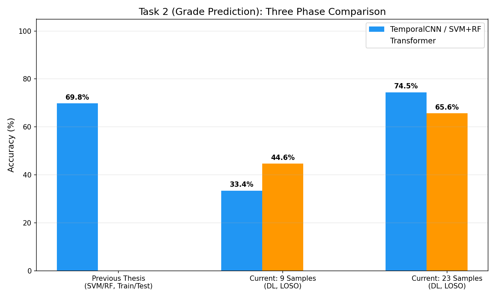
این نمودار چی نشون میده: سه ستون = سه مرحله مختلف پروژه با دقت هر کدوم. What this chart shows: Three columns = three different project phases with their accuracies.Cosa mostra questo grafico: Tre colonne = tre fasi diverse del progetto con le rispettive accuratezze.
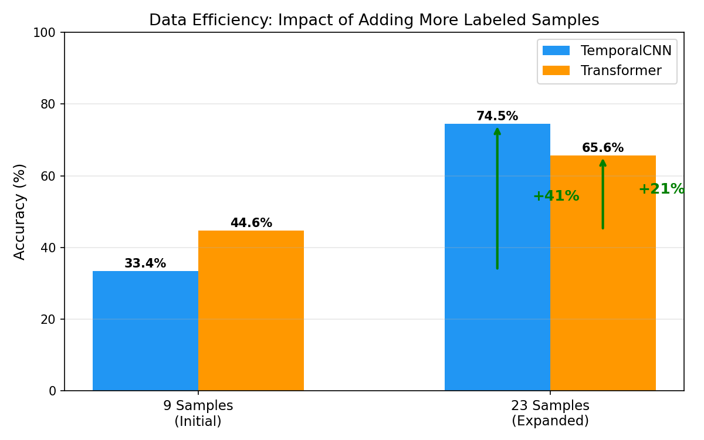
این نمودار چی نشون میده: مقایسه مستقیم ۹ نمونه و ۲۳ نمونه برای هر مدل. What this shows: Direct comparison of 9 vs. 23 samples for each model.Cosa mostra: Confronto diretto tra 9 e 23 campioni per ogni modello.
CNN از هر نمونه جدید بیشتر یاد میگیره چون inductive bias محلی داره (فرض میکنه الگوهای مهم محلی هستن — که برای منحنی AFM درسته). Transformer فرض خاصی نمیکنه و باید همه چیز رو از داده یاد بگیره، پس به داده خیلی بیشتری نیاز داره. CNN learns more from each new sample because it has local inductive bias (assumes important patterns are local — which is correct for AFM curves). Transformer makes no assumptions and must learn everything from data, so it needs much more data.La CNN impara di più da ogni nuovo campione perché ha un inductive bias locale (assume che i pattern importanti siano locali — il che è corretto per le curve AFM). Il Transformer non fa assunzioni e deve imparare tutto dai dati, quindi necessita di molti più dati.
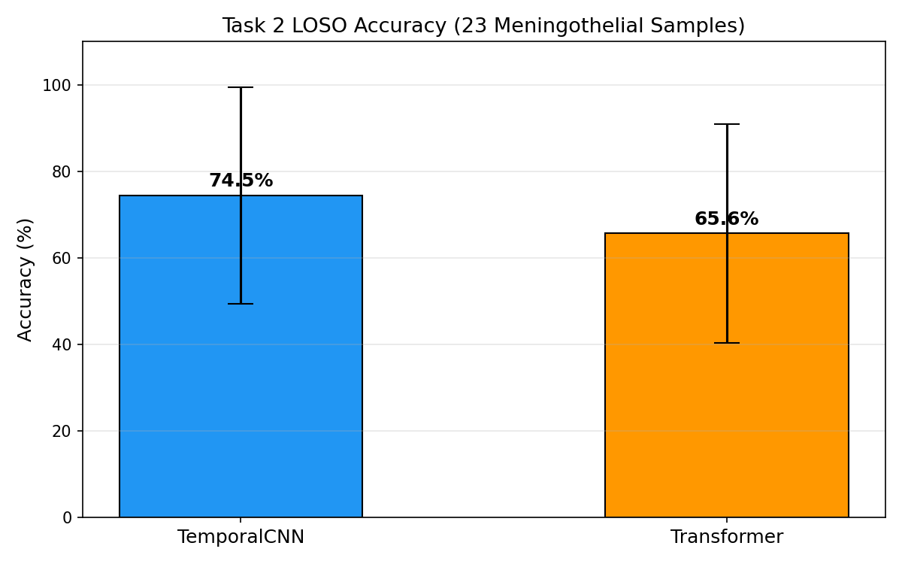
دو ستون با خطهای خطا (error bar). Error bar بزرگ = نتایج بین foldها خیلی متفاوته. Two columns with error bars. Large error bars = results vary a lot between folds.Due colonne con barre di errore. Barre di errore grandi = i risultati variano molto tra i fold.
چون هر fold یه بیمار کامل رو تست میکنه و بعضی بیماران ذاتاً سختتر هستن (بافتشون غیرعادیتره). این واریانس بالا در دیتاستهای پزشکی کوچک طبیعی هست. Because each fold tests a complete patient and some patients are inherently harder (more unusual tissue). This high variance is normal in small medical datasets.Perché ogni fold testa un paziente completo e alcuni pazienti sono intrinsecamente più difficili (tessuto più insolito). Questa alta varianza è normale nei dataset medici piccoli.
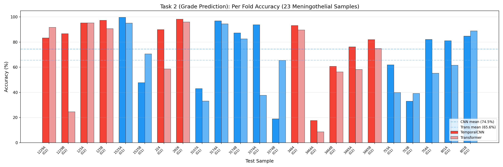
هر ستون = یه بیمار که تست شده. خط افقی = میانگین. Each column = one patient tested. Horizontal line = mean.Ogni colonna = un paziente testato. Linea orizzontale = media.
بهترینها (چرا خوب هستن؟):Best performers (why?):Migliori prestazioni (perché?):
بدترینها (چرا بد هستن؟):Worst performers (why?):Prestazioni peggiori (perché?):
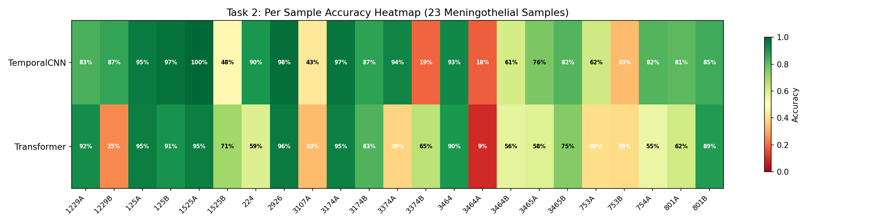
خوندنش سادهست: سبز = خوب، قرمز = بد. ردیف بالا = CNN، ردیف پایین = Transformer. Easy to read: Green = good, Red = bad. Top row = CNN, Bottom row = Transformer.Facile da leggere: Verde = buono, Rosso = cattivo. Riga in alto = CNN, Riga in basso = Transformer.
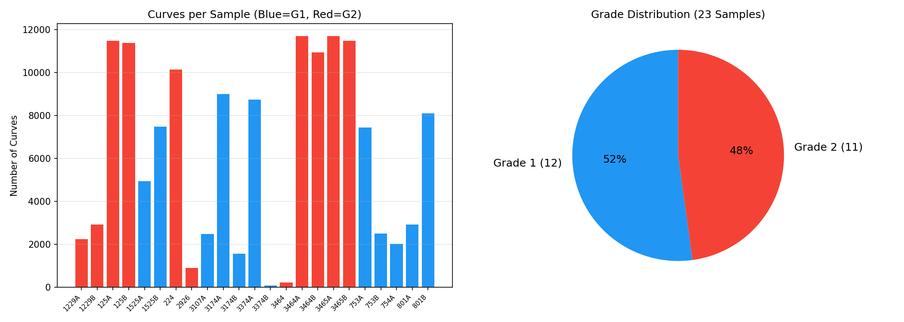
نمودار دایرهای: Grade 1 = ۶۱٪، Grade 2 = ۳۹٪ — تقریباً متوازن (بهتر از ۷۸:۲۲ قبلی) Pie chart: Grade 1 = 61%, Grade 2 = 39% — nearly balanced (better than previous 78:22)Grafico a torta: Grado 1 = 61%, Grado 2 = 39% — quasi bilanciato (meglio del precedente 78:22)
نمودار میلهای: تعداد منحنی هر نمونه. نمونه 224 = ۱۰هزار منحنی ولی 3374B = فقط ۸۴! Bar chart: Curves per sample. Sample 224 = 10K curves but 3374B = only 84!Grafico a barre: Curve per campione. Campione 224 = 10K curve ma 3374B = solo 84!
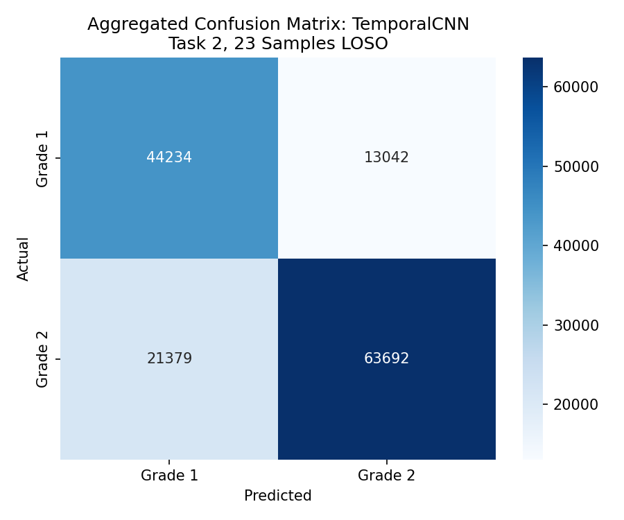
چطور بخونیم:How to read:Come leggere:
Recall Grade 1 = ۷۷٪ | Recall Grade 2 = ۷۵٪ — تقریباً متقارن! Focal Loss خوب کار کرده. Recall Grade 1 = 77% | Recall Grade 2 = 75% — Nearly symmetric! Focal Loss worked well.Recall Grado 1 = 77% | Recall Grado 2 = 75% — Quasi simmetrico! La Focal Loss ha funzionato bene.
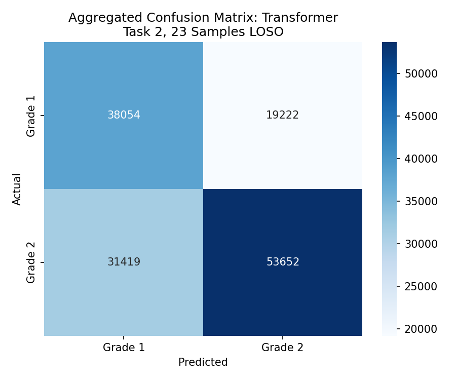
Recall پایینتر (۶۶٪ و ۶۳٪) و خطاهای بیشتر. Transformer الگوهای قوی یاد نگرفته. Lower Recall (66% and 63%) and more errors. Transformer hasn't learned strong patterns.Recall inferiore (66% e 63%) e più errori. Il Transformer non ha appreso pattern forti.
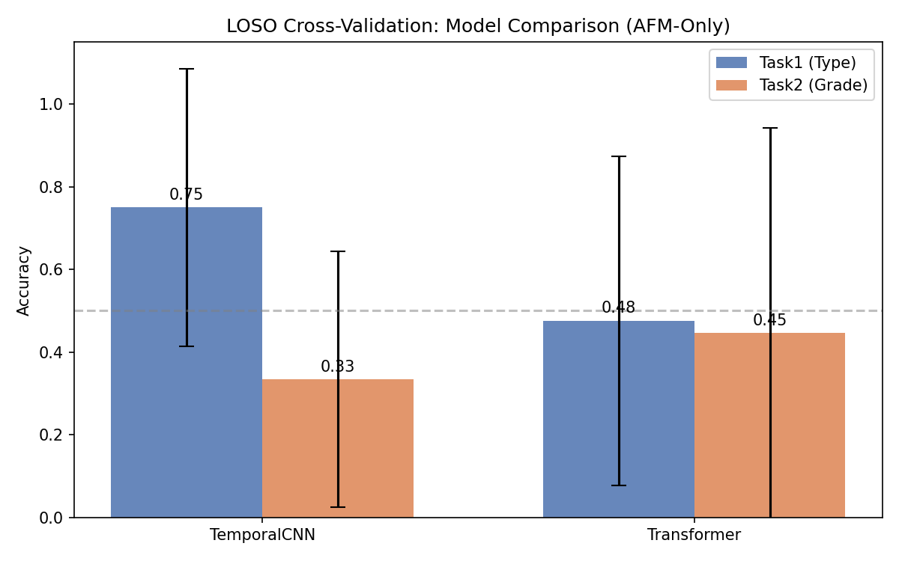
مقایسه ۹ نمونه — Task 2 زیر chance!9-sample comparison — Task 2 below chance!Confronto 9 campioni — Task 2 sotto il livello del caso!
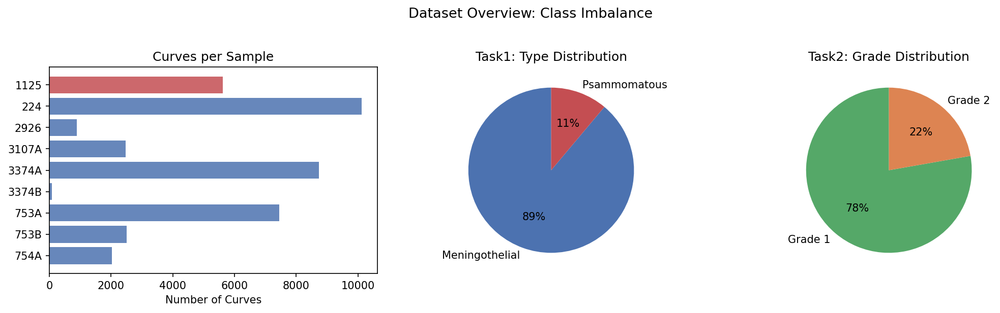
توزیع ۹ نمونه — عدم تعادل شدید9-sample distribution — severe imbalanceDistribuzione 9 campioni — squilibrio grave
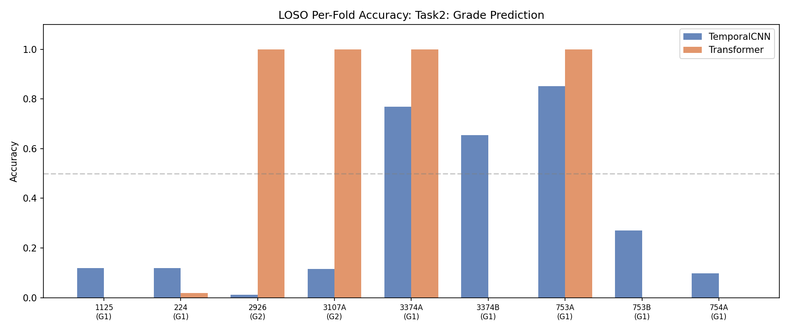
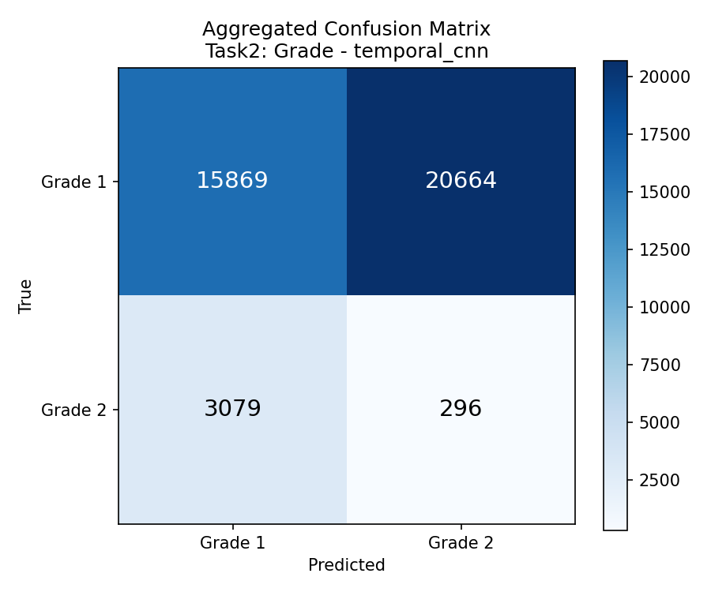
CNN ۹ نمونه — Grade 2 Recall = ۹٪ فقط!CNN 9 samples — Grade 2 Recall = 9% only!CNN 9 campioni — Recall Grado 2 = solo 9%!
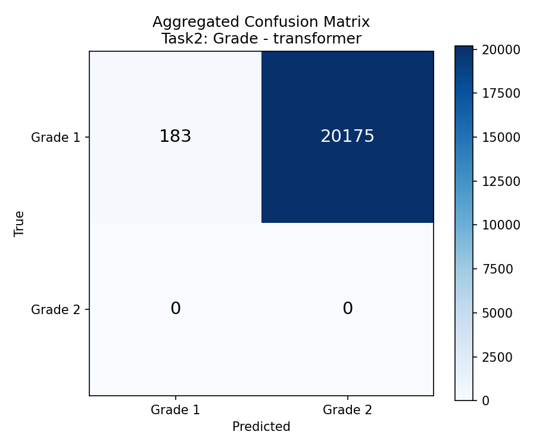
Transformer ۹ نمونه — همه چیز رو G2 میگه!Transformer 9 samples — predicts everything as G2!Transformer 9 campioni — predice tutto come G2!
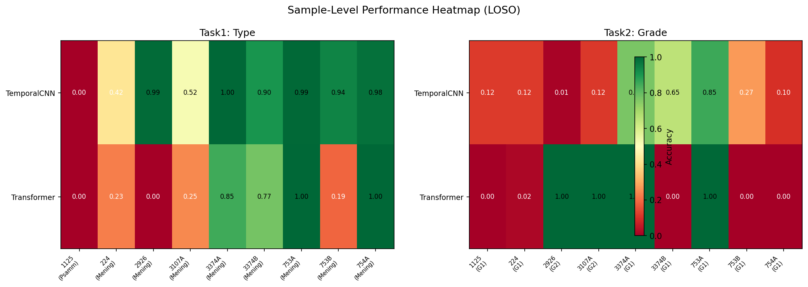
سمت راست (Task 2) تقریباً کاملاً قرمزه = هیچ مدلی هیچچیز یاد نگرفته بود. Right side (Task 2) is almost entirely red = no model learned anything.Lato destro (Task 2) è quasi interamente rosso = nessun modello ha imparato nulla.
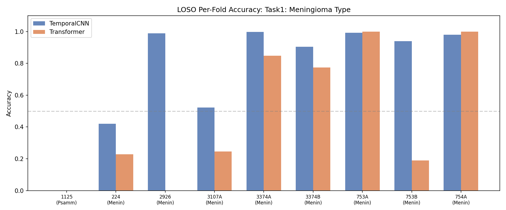
نمونه 1125 (تنها Psammomatous): ۰٪ در هر دو مدل. چون وقتی تست میشه، هیچ نمونه Psammomatous در training نیست. Sample 1125 (only Psammomatous): 0%Campione 1125 (unico Psammomatoso): 0% in entrambi i modelli. Perché quando viene testato, non c'è nessun campione Psammomatoso nel training.
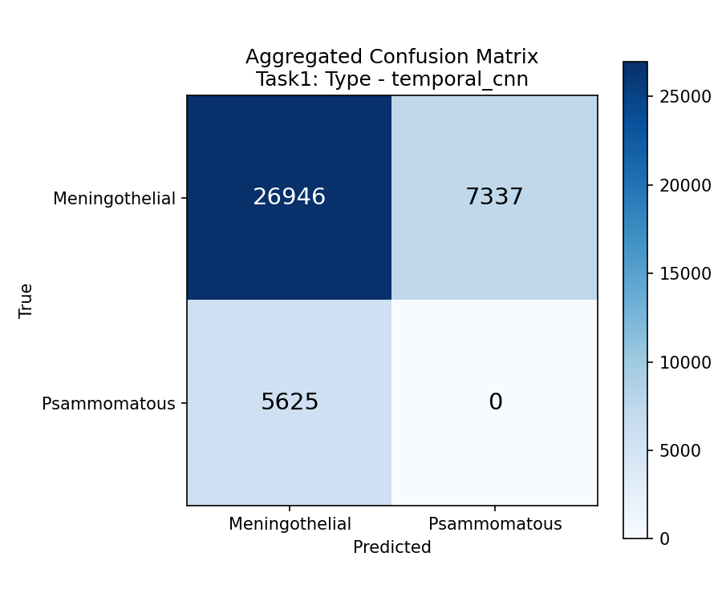
CNN Task1CNN Task1CNN Task1
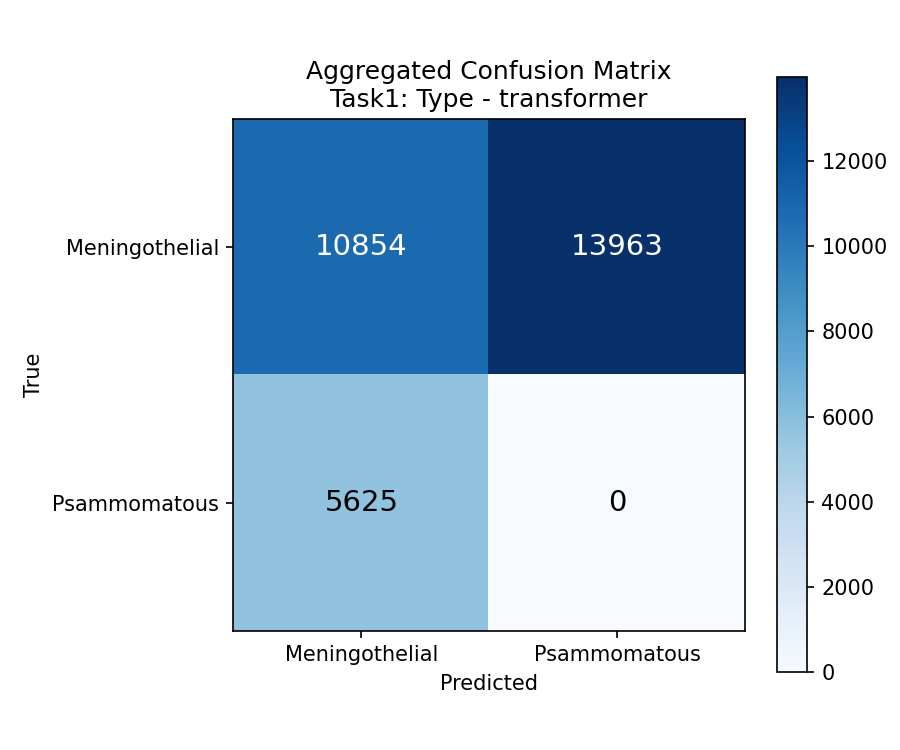
Transformer Task1Transformer Task1Transformer Task1
هر دو مدل: Psammomatous Recall = ۰٪. با ۱ نمونه غیرممکنه. Both models: Psammomatous Recall = 0%Entrambi i modelli: Recall Psammomatoso = 0%. Impossibile con 1 campione.
نمودار Loss یا Accuracy در طول epochها. خط آبی = Training (مدل روی داده آموزشی)، خط قرمز = Validation (مدل روی داده ندیده). اگه فاصله زیاد باشه = overfitting. A plot of Loss or Accuracy over epochs. Blue line = Training (on training data), Red line = Validation (on unseen data). Large gap = overfitting.Un grafico di Loss o Accuratezza nel corso delle epoche. Linea blu = Training (sui dati di addestramento), Linea rossa = Validation (su dati non visti). Gap ampio = overfitting.
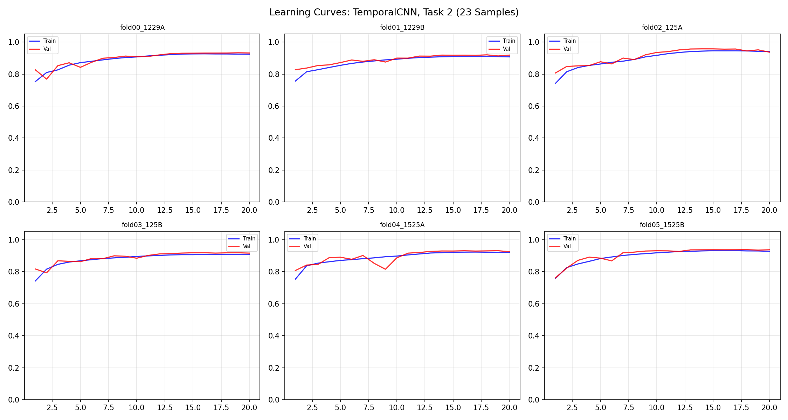
TemporalCNN (۲۳ نمونه): فاصله train-val کم = overfitting کنترل شده. سریع همگرا میشه (epoch ۵-۷). TemporalCNN (23 samples): Small train-val gap = controlled overfittingTemporalCNN (23 campioni): Gap train-val piccolo = overfitting controllato. Converge rapidamente (epoch 5-7).
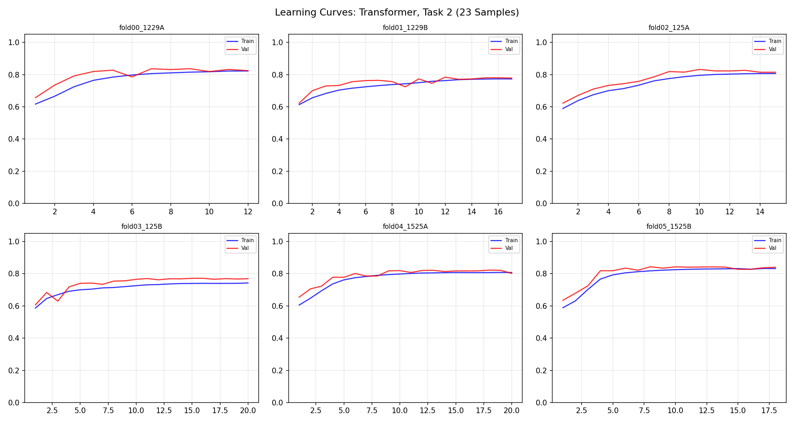
Transformer (۲۳ نمونه): فاصله بیشتر = overfitting بیشتر. کندتر همگرا میشه. Transformer (23 samples): Larger gap = more overfittingTransformer (23 campioni): Gap maggiore = più overfitting. Converge più lentamente.
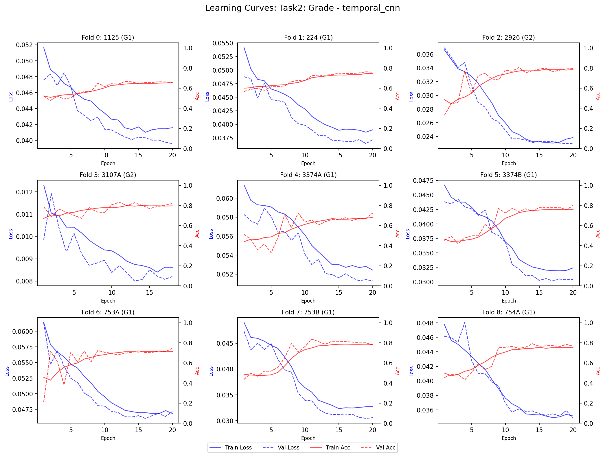
CNN ۹ نمونهCNN 9 samplesCNN 9 campioni
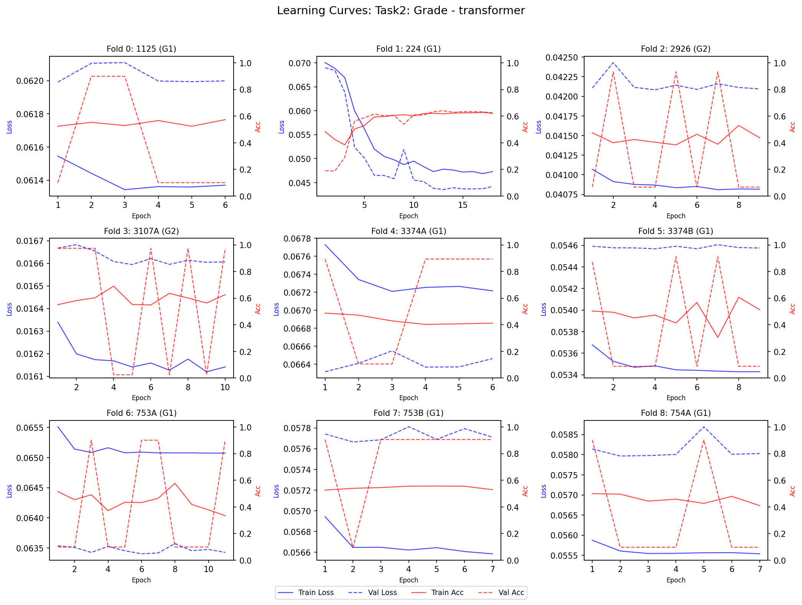
Transformer ۹ نمونهTransformer 9 samplesTransformer 9 campioni
با ۹ نمونه: validation هیچوقت بهتر نمیشه = مدل چیز معناداری یاد نمیگیره. With 9 samples: validation never improves = model doesn't learn anything meaningful.Con 9 campioni: la validation non migliora mai = il modello non impara nulla di significativo.
بعد از آموزش مدل، میخوایم بفهمیم کدوم بخشهای منحنی AFM برای تصمیمگیری مهم بودن. دو روش داریم: After training, we want to know which parts of the AFM curve were important for the decision. Two methods:Dopo l'addestramento, vogliamo sapere quali parti della curva AFM erano importanti per la decisione. Due metodi:
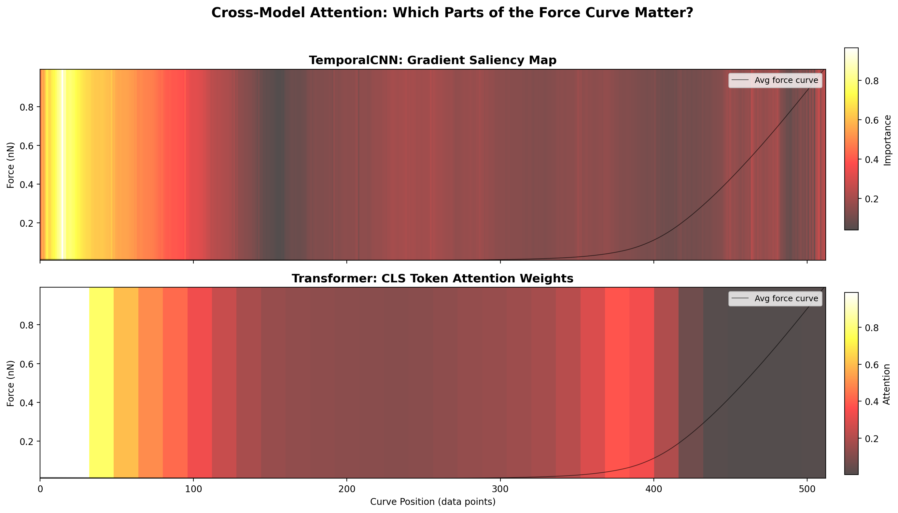
بالا (CNN): بیشترین توجه در ابتدای منحنی (نقطه تماس — contact point). این منطقیه: وقتی سوزن اولین بار به سطح بافت میرسه، سختی سطح رو اندازه میگیره. Top (CNN): Most attention at the start of the curve (contact point). This makes sense: when the tip first touches the tissue surface, it measures surface stiffness.In alto (CNN): Massima attenzione all'inizio della curva (punto di contatto). Ha senso: quando la punta tocca per la prima volta la superficie del tessuto, misura la rigidità superficiale.
پایین (Transformer): بیشترین توجه در انتهای منحنی (عمق فرورفتن). این هم منطقیه: وقتی سوزن عمیق فرو میره، خواص لایههای زیرین بافت رو اندازه میگیره. Bottom (Transformer): Most attention at the end of the curve (indentation depth). This also makes sense: when the tip goes deep, it measures deeper tissue layer properties.In basso (Transformer): Massima attenzione alla fine della curva (profondità di indentazione). Anche questo ha senso: quando la punta va in profondità, misura le proprietà degli strati tissutali più profondi.
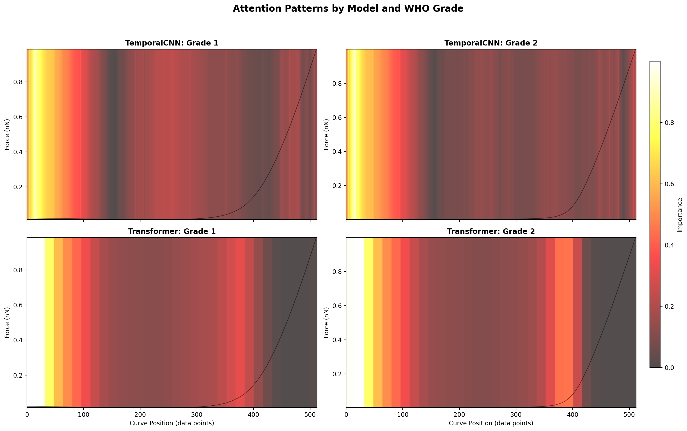
مدلها الگوهای متفاوتی برای Grade 1 و Grade 2 یاد گرفتن — اثبات میکنه که تفاوت واقعی فیزیکی بین دو درجه وجود داره (نه فقط تصادفی). Models learned different patterns for Grade 1 and Grade 2 — proving that real physical differences exist between the two grades (not just random).I modelli hanno appreso pattern diversi per il Grado 1 e il Grado 2 — dimostrando che esistono reali differenze fisiche tra i due gradi (non solo casuali).
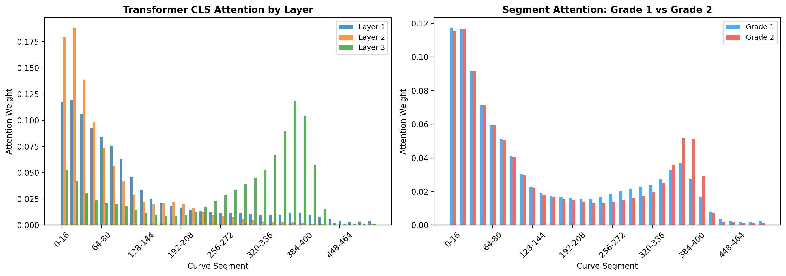
چپ: لایه ۱ (آبی) attention یکنواخت = هنوز ویژگی عمومی. لایه ۳ (سبز) خیلی متمرکز = لایه آخر دقیقاً میدونه کجا مهمه. Left: Layer 1 (blue) has uniform attention = still general features. Layer 3 (green) is very focused = last layer knows exactly where to look.Sinistra: Layer 1 (blu) ha attenzione uniforme = ancora caratteristiche generali. Layer 3 (verde) è molto focalizzato = l'ultimo layer sa esattamente dove guardare.
راست: Grade 1 و Grade 2 الگوی attention متفاوت دارن = مدل واقعاً تفاوت بیولوژیکی پیدا کرده. Right: Grade 1 and Grade 2 have different attention patterns = model found real biological differences.Destra: Grado 1 e Grado 2 hanno pattern di attenzione diversi = il modello ha trovato reali differenze biologiche.
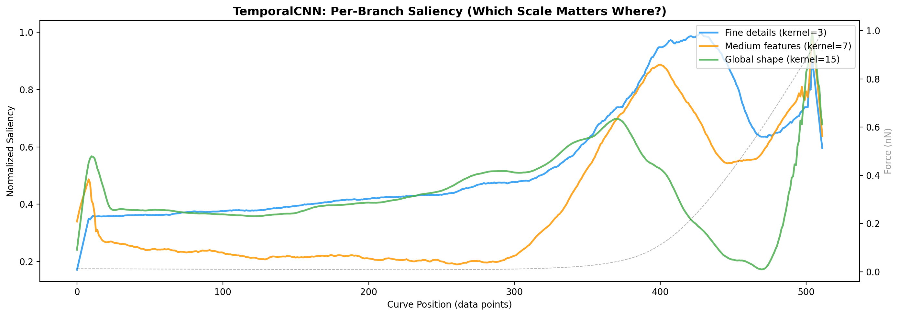
| مدلModelModello | رویکردApproachApproccio | دقت میانگینMean AccuracyAccuratezza Media | سطح آموزشTraining LevelLivello di Addestramento |
|---|---|---|---|
| TemporalCNN | سه شاخه موازی + majority voteThree parallel branches + majority voteTre rami paralleli + majority vote | 74.45% | منحنی (curve-level)Curve-levelA livello di curva |
| Transformer | self-attention بین توکنها + majority voteSelf-attention between tokens + majority voteSelf-attention tra token + majority vote | 65.64% | منحنی (curve-level)Curve-levelA livello di curva |
| Two-Stage ABMIL | CNN + gated attention end-to-end برای بیمارCNN + gated attention end-to-end for patientCNN + gated attention end-to-end per paziente | 73.91% | بیمار (patient-level)Patient-levelA livello di paziente |
ABMIL با ۲۲ بیمار (bag) در هر fold آموزش میبینه. Stage 2 attention network فقط ۲۲ نمونه positive/negative دیده — خیلی کمه برای یادگیری الگوی پایدار. CNN با ۱۳۰هزار منحنی مستقیماً آموزش میبینه و هر منحنی یه نمونهی مستقل هست. با داده بیشتر (مثلاً ۵۰+ بیمار)، ABMIL احتمالاً از CNN پیشی میگرفت. ABMIL trains on 22 patients (bags) per fold. The Stage 2 attention network has only seen 22 positive/negative examples — too few for stable pattern learning. CNN trains directly on 130,000 curves, each an independent sample. With more data (e.g., 50+ patients), ABMIL would likely surpass CNN.ABMIL si addestra su 22 pazienti (bag) per fold. La rete di attenzione dello Stadio 2 ha visto solo 22 esempi positivi/negativi — troppo pochi per un apprendimento stabile dei pattern. La CNN si addestra direttamente su 130.000 curve, ciascuna un campione indipendente. Con più dati (es. 50+ pazienti), ABMIL supererebbe probabilmente CNN.
وقتی مدل یه بیمار رو اشتباه دستهبندی میکنه، دو احتمال وجود داره: ۱) مدل خطا کرده — منحنیها واقعاً شبیه label درست هستن. ۲) نمونه مرزی — منحنیهای این بیمار از نظر بیومکانیکی واقعاً شبیه گروه مقابل هستن، حتی اگه label پاتولوژیکش متفاوت باشه. When the model misclassifies a patient, two possibilities exist: 1) True model error — curves are genuinely similar to the correct label. 2) Borderline sample — the patient's curves are biomechanically similar to the opposite group, even if the pathological label differs.Quando il modello classifica erroneamente un paziente, esistono due possibilità: 1) Errore reale del modello — le curve sono genuinamente simili all'etichetta corretta. 2) Campione borderline — le curve del paziente sono biomeccanicamente simili al gruppo opposto, anche se l'etichetta patologica differisce.
برای تشخیص این دو حالت، cosine similarity بین embedding این بیمار و centroid هر کلاس محاسبه شد. اگه embedding به centroid گروه مقابل نزدیکتر باشه → نمونه مرزی واقعی. اگه به centroid گروه خودش نزدیکتر باشه → خطای مدل. To distinguish these two cases, cosine similarity was computed between the patient's embedding and each class centroid. If the embedding is closer to the opposite class centroid → genuine borderline sample. If closer to its own class centroid → true model error.Per distinguere questi due casi, è stata calcolata la cosine similarity tra l'embedding del paziente e il centroide di ciascuna classe. Se l'embedding è più vicino al centroide della classe opposta → campione borderline genuino. Se più vicino al centroide della propria classe → errore del modello.
از ۶ بیمار اشتباه دستهبندیشده: ۴ نمونه مرزی واقعی پیدا شدن و ۲ خطای مدل از تحلیل حذف شدن. Out of 6 misclassified patients: 4 genuine borderline samples identified and 2 true model errors excluded from the report.Dei 6 pazienti classificati erroneamente: 4 campioni borderline genuini identificati e 2 errori reali del modello esclusi dall'analisi.
Embedding (بردار نمایش بیمار): CNN آموزشدیدهی Stage 1 هر منحنی نیرو رو به یه بردار ۲۵۶بعدی تبدیل میکنه. برای یه بیمار با N منحنی، میانگین این N بردار رو میگیریم → یه بردار ۲۵۶بعدی که کل بیمار رو نشون میده. این بردار "امضای بیومکانیکی" اون بیماره — شکل، سختی، و الگوی کلی منحنیهاش. Embedding (patient representation vector): The trained Stage 1 CNN converts each force curve into a 256-dimensional vector. For a patient with N curves, we take the mean of those N vectors → one 256-dimensional vector representing the entire patient. This vector is the patient's "biomechanical signature" — the shape, stiffness, and overall pattern of their curves. Embedding (vettore di rappresentazione del paziente): La CNN addestrata dello Stadio 1 converte ogni curva di forza in un vettore a 256 dimensioni. Per un paziente con N curve, si calcola la media di questi N vettori → un unico vettore a 256 dimensioni che rappresenta l'intero paziente. Questo vettore è la "firma biomeccanica" del paziente — forma, rigidità e pattern generale delle sue curve.
Centroid (مرکز کلاس): برای هر کلاس (Grade1 و Grade2)، میانگین embedding همهی بیماران آموزشی اون کلاس رو محاسبه میکنیم. نتیجه یه بردار ۲۵۶بعدی هست که "بیمار نمونهی Grade1" یا "Grade2" رو نشون میده. مثل یه نقطهی مرکزی در فضای ۲۵۶بعدی که نمایندهی کل گروه هست. Centroid (class centre): For each class (Grade1 and Grade2), we compute the mean of the embeddings of all training patients in that class. The result is a 256-dimensional vector representing the "typical Grade1 patient" or "typical Grade2 patient". Like a central point in 256-dimensional space that represents the whole group. Centroide (centro della classe): Per ogni classe (Grade1 e Grade2), si calcola la media degli embedding di tutti i pazienti di addestramento in quella classe. Il risultato è un vettore a 256 dimensioni che rappresenta il "paziente Grade1 tipico" o "Grade2 tipico". Come un punto centrale nello spazio a 256 dimensioni che rappresenta l'intero gruppo.
Cosine Similarity (شباهت جهتی): با دو بردار A (embedding بیمار) و B (centroid کلاس)، cosine similarity زاویهی بین آنها را اندازه میگیرد: Cosine Similarity (directional similarity): Given two vectors A (patient embedding) and B (class centroid), cosine similarity measures the angle between them: Cosine Similarity (similarità direzionale): Dati due vettori A (embedding del paziente) e B (centroide della classe), la cosine similarity misura l'angolo tra loro:
cos(θ) = (A · B) / (|A| × |B|) → از −۱ تا +۱→ ranges from −1 to +1→ da −1 a +1 +1 : جهت کاملاً یکسان (بیمار رفتاری مثل centroid کلاس داره)exactly same direction (patient behaves like the class centroid)stessa direzione (il paziente si comporta come il centroide della classe) 0 : عمود (هیچ ارتباطی ندارند)perpendicular (no relation)perpendicolare (nessuna relazione) −1 : جهت کاملاً مخالفopposite directiondirezione opposta
چرا cosine؟ چون به طول بردار (تعداد منحنیها) حساس نیست — فقط جهت مهمه. بیماری با ۸۴ منحنی و بیماری با ۱۱,۰۰۰ منحنی بهطور منصفانه مقایسه میشوند. Why cosine? Because it is insensitive to vector length (number of curves) — only direction matters. A patient with 84 curves and one with 11,000 curves are compared fairly. Perché cosine? Perché non è sensibile alla lunghezza del vettore (numero di curve) — conta solo la direzione. Un paziente con 84 curve e uno con 11.000 vengono confrontati equamente.
Margin (حاشیهی اطمینان): margin = |cos_G1 − cos_G2|. نشون میده مدل چقدر مطمئن بوده. margin بزرگ → جداسازی قطعی. margin کوچک → بیمار در مرز دو کلاس نشسته. Margin (confidence gap): margin = |cos_G1 − cos_G2|. Shows how decisive the classification was. Large margin → decisive separation. Small margin → patient is sitting at the class boundary. Margin (margine di confidenza): margin = |cos_G1 − cos_G2|. Indica quanto è stata decisiva la classificazione. Margin grande → separazione decisiva. Margin piccolo → il paziente è al confine tra le classi.
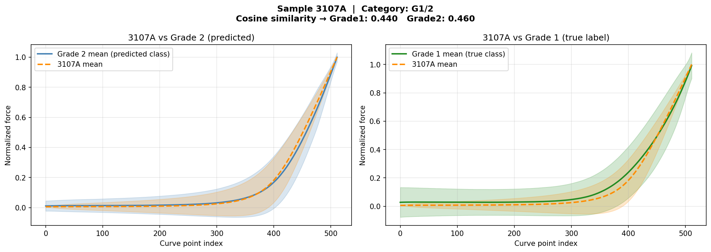
مرحله ۱ — استخراج embedding: CNN فریزشده همهی ۲,۴۷۵ منحنی 3107A را پردازش کرد. هر منحنی → بردار ۲۵۶بعدی. میانگین همه → یه بردار واحد که "امضای بیومکانیکی" 3107A رو نشون میده. Step 1 — Extract embedding: The frozen CNN processed all 2,475 curves of 3107A. Each curve → 256-dim vector. Mean of all → a single vector representing 3107A's "biomechanical signature". Passo 1 — Estrazione embedding: La CNN congelata ha elaborato tutte le 2.475 curve di 3107A. Ogni curva → vettore a 256 dimensioni. Media di tutte → un singolo vettore che rappresenta la "firma biomeccanica" di 3107A.
مرحله ۲ — محاسبه centroidها: از بیماران training این fold، میانگین embedding همهی Grade1ها → centroid_G1 و میانگین همهی Grade2ها → centroid_G2. Step 2 — Compute centroids: From the training patients in this fold, mean embedding of all Grade1s → centroid_G1, and mean of all Grade2s → centroid_G2. Passo 2 — Calcolo centroidi: Dai pazienti di addestramento di questo fold, media degli embedding di tutti i Grade1 → centroid_G1, e media di tutti i Grade2 → centroid_G2.
مرحله ۳ — محاسبه cosine similarity: Step 3 — Compute cosine similarity: Passo 3 — Calcolo cosine similarity:
cos(3107A, centroid_G2) = 0.4601 ← زاویهی کوچکتر با Grade2← smaller angle with Grade2← angolo minore con Grade2 cos(3107A, centroid_G1) = 0.4398 ← زاویهی کمی بزرگتر با Grade1← slightly larger angle with Grade1← angolo leggermente maggiore con Grade1 margin = |0.4601 − 0.4398| = 0.0203
مرحله ۴ — تصمیمگیری: مدل از سادهترین قانون ممکن استفاده میکنه: کدام centroid نزدیکتر است؟ چون cos_G2 > cos_G1، پاسخ Grade2 هست. ولی تفاوت فقط ۰.۰۲ هست — در فضای ۲۵۶بعدی این یعنی 3107A تقریباً روی خط مرز بین دو کلاس قرار داره. Step 4 — Decision: The model uses the simplest possible rule: which centroid is closer? Since cos_G2 > cos_G1, the answer is Grade2. But the gap is only 0.02 — in 256-dimensional space this means 3107A sits almost exactly on the boundary line between the two classes. Passo 4 — Decisione: Il modello usa la regola più semplice possibile: quale centroide è più vicino? Poiché cos_G2 > cos_G1, la risposta è Grade2. Ma la differenza è solo 0.02 — nello spazio a 256 dimensioni questo significa che 3107A si trova quasi esattamente sulla linea di confine tra le due classi.
نتیجهگیری: مدل "اشتباه" نکرد به معنای کلاسیک — embedding 3107A واقعاً به centroid Grade2 نزدیکتر هست. اما margin=0.02 یعنی این نزدیکی از نظر آماری بیمعنیه. فاکت که label این نمونه از Grade2 به Grade1 اصلاح شد نشون میده حتی پاتولوژیستها هم در این مورد تردید داشتند. Conclusion: The model did not make a "mistake" in the classical sense — 3107A's embedding genuinely is closer to the Grade2 centroid. But margin=0.02 means this proximity is statistically insignificant. The fact that this sample's label was corrected from Grade2 to Grade1 shows even the pathologists had uncertainty about this case. Conclusione: Il modello non ha commesso un "errore" nel senso classico — l'embedding di 3107A è genuinamente più vicino al centroide di Grade2. Ma margin=0.02 significa che questa vicinanza è statisticamente irrilevante. Il fatto che l'etichetta di questo campione sia stata corretta da Grade2 a Grade1 mostra che anche i patologi avevano incertezza su questo caso.
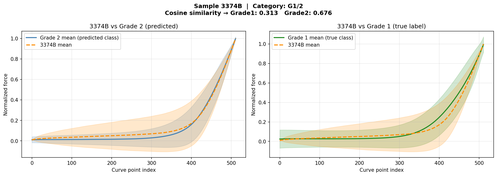
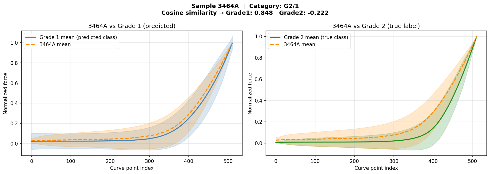
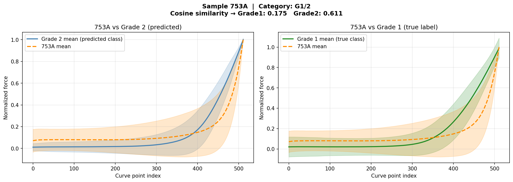
| نمونهSampleCampione | دستهCategoryCategoria | شباهت G1Cos G1Cos G1 | شباهت G2Cos G2Cos G2 | Margin | تعداد منحنیCurvesCurve |
|---|---|---|---|---|---|
| 3107A | G1/2 | 0.440 | 0.460 | 0.020 | 2,475 |
| 3374B | G1/2 | 0.313 | 0.676 | 0.364 | 84 |
| 3464A | G2/1 | 0.848 | −0.222 | 1.070 | 11,693 |
| 753A | G1/2 | 0.175 | 0.611 | 0.436 | 7,441 |
حذف شده (خطای مدل): 3464B و 3465B — embedding این دو نمونه به centroid Grade2 (label درست) نزدیکتر بود، پس مدل واقعاً اشتباه کرده بود و در این تحلیل نمیآیند. Excluded (model error): 3464B and 3465B — the embeddings of these two samples were closer to the Grade2 centroid (correct label), so the model made a genuine error and they are excluded from this analysis.Esclusi (errore del modello): 3464B e 3465B — gli embedding di questi due campioni erano più vicini al centroide di Grade2 (etichetta corretta), quindi il modello ha commesso un errore genuino e sono esclusi da questa analisi.
از ۶ بیمار اشتباه تشخیصدادهشده، ۴ نفر (۶۷٪) دارای خصوصیات بیومکانیکی منحنی متفاوت از label پاتولوژیکشان هستند. این موضوع چند تفسیر دارد: ۱) خواص مکانیکی بافت همیشه با درجه پاتولوژیکی کاملاً همبسته نیستند. ۲) بعضی بیماران Grade2 ممکن است در مراحل اولیه تومور باشند و خواص بیومکانیکیشان هنوز به Grade1 نزدیک است. ۳) دقت labelها یکی از عوامل محدودکننده کار است. Of 6 misclassified patients, 4 (67%) have biomechanical curve properties that differ from their pathological label. This has several interpretations: 1) tissue mechanical properties are not always perfectly correlated with pathological grade. 2) Some Grade2 patients may be in early tumour stages and their biomechanical properties are still close to Grade1. 3) Label accuracy is one of the limiting factors of this work.Dei 6 pazienti classificati erroneamente, 4 (67%) hanno proprietà biomeccaniche delle curve diverse dalla loro etichetta patologica. Questo ha diverse interpretazioni: 1) le proprietà meccaniche del tessuto non sono sempre perfettamente correlate con il grado patologico. 2) Alcuni pazienti Grade2 potrebbero essere in stadi precoci del tumore e le loro proprietà biomeccaniche sono ancora vicine a Grade1. 3) L'accuratezza delle etichette è uno dei fattori limitanti di questo lavoro.
هر دو نمونه از بیمار ۳۴۶۴ هستند، label پاتولوژیک هر دو Grade2 است، ولی رفتار بیومکانیکیشان کاملاً مخالف هم است: Both samples come from patient 3464, both have pathological label Grade2, yet their biomechanical behaviour is completely opposite: Entrambi i campioni provengono dal paziente 3464, entrambi hanno etichetta patologica Grade2, eppure il loro comportamento biomeccanico è completamente opposto:
| نمونهSampleCampione | labelLabelEtichetta | بیومکانیکBiomechanicsBiomeccanica | نتیجهResultRisultato |
|---|---|---|---|
| 3464A | Grade2 | شبیه Grade1 (cos_G1=0.848)Resembles Grade1 (cos_G1=0.848)Somiglia a Grade1 (cos_G1=0.848) | Borderline G2/1Borderline G2/1Borderline G2/1 |
| 3464B | Grade2 | شبیه Grade2 (cos_G2 بزرگتر)Resembles Grade2 (cos_G2 larger)Somiglia a Grade2 (cos_G2 maggiore) | خطای مدل (excluded)Model error (excluded)Errore modello (escluso) |
دلیل: Intratumoral Mechanical Heterogeneity (هتروژنیتی مکانیکی داخل تومور). یک مننژیوم Grade2 به معنای این نیست که کل بافت یکدست آتیپیک است. تومورهای Grade2 بر اساس معیارهای WHO باید در جایی از بافت ویژگیهای آتیپیک (تراکم سلولی بالا، میتوز، نکروز) داشته باشند — ولی این ویژگیها توزیع یکنواخت ندارند. AFM هر بار فقط یک ناحیهی میکرومتری از بافت را اندازه میگیرد: Reason: Intratumoral Mechanical Heterogeneity. A Grade2 meningioma does not mean the entire tissue is uniformly atypical. Grade2 tumours by WHO criteria must have atypical features (high cell density, mitosis, necrosis) somewhere in the tissue — but these features are not uniformly distributed. AFM each time measures only a micrometre-scale region of the tissue: Motivo: Eterogeneità Meccanica Intratumorale. Un meningioma Grade2 non significa che l'intero tessuto sia uniformemente atipico. I tumori Grade2 secondo i criteri WHO devono avere caratteristiche atipiche (alta densità cellulare, mitosi, necrosi) da qualche parte nel tessuto — ma queste caratteristiche non sono distribuite uniformemente. L'AFM ogni volta misura solo una regione a scala micrometrica del tessuto:
بافت بیمار ۳۴۶۴:Patient 3464 tissue:Tessuto paziente 3464: [منطقه ARegion ARegione A] [منطقه BRegion BRegione B] ────────────────────── ────────────────────── سلولهای نرمالتر سلولهای آتیپیکNormal-appearing cells Atypical cellsCellule normali Cellule atipiche ماتریکس کمتر آسیبدیده تراکم بالا، میتوزLess disrupted matrix High density, mitosisMatrice meno alterata Alta densità, mitosi AFM → Grade1-like AFM → Grade2-like ↓ ↓ Sample 3464A Sample 3464B
پاتولوژیست کل اسلاید را میبیند و چون جایی در آن آتیپی وجود دارد، label را Grade2 میزند. ولی AFM چشم ندارد — نمیداند دقیقاً روی کدام منطقه از بافت نشسته. این spatial blindness محدودیت اصلی AFM بهتنهایی است. The pathologist sees the entire slide and, because atypical features exist somewhere in it, assigns label Grade2. But AFM is "blind" — it does not know which exact region of the tissue it is measuring. This spatial blindness is the main limitation of AFM alone. Il patologo vede l'intero vetrino e, poiché esistono caratteristiche atipiche da qualche parte, assegna l'etichetta Grade2. Ma l'AFM è "cieco" — non sa in quale esatta regione del tessuto sta misurando. Questa cecità spaziale è la principale limitazione dell'AFM da solo.
دو مدالیته اطلاعات مکمل دارند، نه تکراری: The two modalities carry complementary information, not redundant: Le due modalità portano informazioni complementari, non ridondanti:
| AFM | هیستولوژیHistologyIstologia |
|---|---|
| سختی و چسبندگی مکانیکیMechanical stiffness & adhesionRigidità & adesione meccanica | شکل هسته، تراکم سلولی، الگوی بافتیNuclear shape, cell density, tissue architectureForma nucleare, densità cellulare, architettura tissutale |
| دقت بالا در یک نقطهHigh precision at one pointAlta precisione in un punto | نمای کلی از کل بافتGlobal view of the entire tissueVista globale dell'intero tessuto |
| نمیداند کجای بافت اندازه گرفتهDoes not know where in tissue it measuredNon sa dove nel tessuto ha misurato | میبیند کدام ناحیه آتیپیک استSees which region is atypicalVede quale regione è atipica |
تأثیر بر کیسهای این تحلیل: برای 3107A که margin فقط ۰.۰۲ بود و مدل عملاً سکه انداخت، هیستولوژی میتوانست بگوید آیا در این بافت mitotic figures یا nuclear pleomorphism وجود دارد — اطلاعاتی که AFM بهتنهایی نمیتواند تشخیص دهد. برای 3464A، اگر هیستولوژی نشان میداد که منطقهی اندازهگیری AFM در بخش سالم بافت بوده، مدل میتوانست وزن بیشتری به label پاتولوژیکی بدهد. Impact on cases in this analysis: For 3107A (margin=0.02, model essentially flipped a coin), histology could have revealed whether mitotic figures or nuclear pleomorphism are present — information AFM alone cannot detect. For 3464A, if histology showed that the AFM measurement region was in the healthy part of the tissue, the model could have given more weight to the pathological label. Impatto sui casi di questa analisi: Per 3107A (margin=0.02, il modello ha essenzialmente tirato una moneta), l'istologia avrebbe potuto rivelare se sono presenti figure mitotiche o pleomorfismo nucleare — informazioni che l'AFM da solo non può rilevare. Per 3464A, se l'istologia avesse mostrato che la regione di misurazione AFM era nella parte sana del tessuto, il modello avrebbe potuto dare più peso all'etichetta patologica.
جواب: پایاننامه قبلی با SVM/RF و ویژگیهای دستی (مثل Young's Modulus) به ۶۹.۸٪ رسید. مشکل روشهای کلاسیک اینه که ما باید خودمون بگیم کدوم ویژگیها مهمن. ممکنه ویژگیهای مهمی رو از دست بدیم. یادگیری عمیق خودش ویژگیها رو از داده خام استخراج میکنه (end-to-end learning). و وقتی داده کافی داشتیم (۲۳ نمونه)، به ۷۴.۵٪ رسیدیم — بهتر از قبلی، حتی با ارزیابی سختتر (LOSO). Answer: The previous thesis achieved 69.8% with SVM/RF and hand-crafted features (like Young's Modulus). The problem with classical methods is that we must manually decide which features matter. We might miss important ones. Deep learning automatically extracts features from raw data (end-to-end learning). When we had enough data (23 samples), we reached 74.5% — better than before, even with tougher evaluation (LOSO).Risposta: La tesi precedente ha raggiunto il 69,8% con SVM/RF e caratteristiche costruite manualmente (come il Modulo di Young). Il problema dei metodi classici è che dobbiamo decidere manualmente quali caratteristiche contano. Potremmo perderne di importanti. Il deep learning automaticamente estrae caratteristiche dai dati grezzi (apprendimento end-to-end). Quando avevamo dati sufficienti (23 campioni), abbiamo raggiunto il 74,5% — meglio di prima, anche con una valutazione più rigorosa (LOSO).
جواب: AFM خواص مکانیکی (سختی، چسبندگی) رو اندازه میگیره. هیستولوژی ساختار بصری (شکل سلولها، الگوی بافت) رو نشون میده. اینها اطلاعات مکمل هستن — مثل اینکه یه دکتر هم MRI بگیره هم خونآزمایش. ترکیب هر دو باید تشخیص رو بهتر کنه. Answer: AFM measures mechanical properties (stiffness, adhesion). Histology shows visual structure (cell shapes, tissue patterns). These are complementary — like a doctor doing both MRI and blood tests. Combining both should improve diagnosis.Risposta: L'AFM misura le proprietà meccaniche (rigidità, adesione). L'istologia mostra la struttura visiva (forma delle cellule, pattern del tessuto). Questi sono complementari — come un medico che fa sia MRI che analisi del sangue. Combinare entrambi dovrebbe migliorare la diagnosi.
جواب: مقایسه مستقیم دقیقاً منصفانه نیست چون: ۱) ما LOSO استفاده کردیم (سختتر) ولی قبلی train/test split ساده (آسانتر)، ۲) حجم داده متفاوته، ۳) روشها متفاوتن. ولی با وجود ارزیابی سختتر، CNN ما (۷۴.۵٪) از قبلی (۶۹.۸٪) بهتره. علاوه بر این، Two-Stage ABMIL (۷۳.۹۱٪) با رویکرد کاملاً متفاوت (patient-level) تقریباً همان نتیجه رو میده — که نشوندهنده پایداری یافتههاست. Answer: Direct comparison is not exactly fair because: 1) We used LOSO (harder) vs. simple train/test split (easier), 2) Different data sizes, 3) Different methods. But despite tougher evaluation, our CNN (74.5%) outperforms the previous (69.8%). Additionally, Two-Stage ABMIL (73.91%) achieves nearly the same result with a completely different approach (patient-level) — showing the robustness of the findings.Risposta: Il confronto diretto non è esattamente equo perché: 1) Abbiamo usato LOSO (più difficile) vs. semplice divisione train/test (più facile), 2) Dimensioni dei dati diverse, 3) Metodi diversi. Ma nonostante la valutazione più rigorosa, la nostra CNN (74,5%) supera la precedente (69,8%). Inoltre, Two-Stage ABMIL (73,91%) ottiene quasi lo stesso risultato con un approccio completamente diverso (a livello di paziente) — dimostrando la robustezza dei risultati.
جواب: چهار دلیل: ۱) داده بیشتر = تنوع بافتی بیشتر برای یادگیری، ۲) تعادل بهتر کلاسها (از ۷:۲ به ۱۴:۹)، ۳) تصحیح ۲ لیبل اشتباه که مدل رو فعالانه گمراه میکرد، ۴) فیلتر نوع — فقط Meningothelial نگه داشتیم تا مدل تفاوت نوع رو با تفاوت درجه قاطی نکنه. Answer: Four reasons: 1) More data = more tissue diversity for learning, 2) Better class balance (from 7:2 to 14:9), 3) Correcting 2 wrong labels that were actively misleading the model, 4) Subtype filtering — keeping only Meningothelial so the model doesn't confuse subtype differences with grade differences.Risposta: Quattro motivi: 1) Più dati = maggiore diversità tissutale per l'apprendimento, 2) Migliore bilanciamento delle classi (da 7:2 a 14:9), 3) Correzione di 2 etichette errate che fuorviavano attivamente il modello, 4) Filtraggio per sottotipo — mantenendo solo i Meningoteliali in modo che il modello non confonda le differenze di sottotipo con quelle di grado.
جواب: تقسیم داده در سطح بیمار (نه منحنی) انجام شد. در LOSO، وقتی بیمار X تست میشه، هیچ منحنیای از اون بیمار در training نیست. حتی validation هم از بیماران دیگه ساخته میشه. Answer: Data splitting was done at the patient level (not curve level). In LOSO, when patient X is tested, no curves from that patient are in training. Even validation is built from other patients.Risposta: La divisione dei dati è stata effettuata al livello del paziente (non della curva). In LOSO, quando il paziente X è testato, nessuna curva di quel paziente è nel training. Anche la validation è costruita da altri pazienti.
جواب: صادقانه: ۱) دیتاست کوچک (۲۳ بیمار)، ۲) واریانس بالا (±۲۵٪)، ۳) Multimodal هنوز اجرا نشده (فقط ۳ نمونه هیستولوژی دارن)، ۴) Task 1 غیرممکن (۲۲:۱ عدم تعادل)، ۵) AUC-ROC در LOSO قابل اعتماد نیست چون هر fold فقط یه کلاس تست داره. Answer: Honestly: 1) Small dataset (23 patients), 2) High variance (+/-25%), 3) Multimodal not yet run (only 3 samples have histology), 4) Task 1 impossible (22:1 imbalance), 5) AUC-ROC unreliable in LOSO since each fold only tests one class.Risposta: Onestamente: 1) Dataset piccolo (23 pazienti), 2) Alta varianza (±25%), 3) Multimodale non ancora eseguito (solo 3 campioni hanno istologia), 4) Task 1 impossibile (squilibrio 22:1), 5) AUC-ROC inaffidabile in LOSO poiché ogni fold testa solo una classe.
جواب: ۱) اجرای آزمایشهای multimodal، ۲) جمعآوری نمونه بیشتر (۵۰+ بیمار)، ۳) Data Augmentation روی منحنیها (نویز، shift)، ۴) Ensemble CNN+Transformer (چون بخشهای مکمل منحنی رو میبینن)، ۵) t-SNE/UMAP برای visualization embeddingها، ۶) آنالیز آماری (McNemar test). نکته: Two-Stage ABMIL در این پروژه پیادهسازی شد و ۷۳.۹۱٪ دقت بیمارمحور به دست آورد — با داده بیشتر احتمالاً از CNN پیشی میگرفت. Answer: 1) Run multimodal experiments, 2) Collect more samples (50+ patients), 3) Data Augmentation on curves (noise, shift), 4) Ensemble CNN+Transformer (since they see complementary parts), 5) t-SNE/UMAP for embedding visualization, 6) Statistical analysis (McNemar test). Note: Two-Stage ABMIL was already implemented and achieved 73.91% at patient level — with more data it would likely surpass CNN.Risposta: 1) Eseguire esperimenti multimodali, 2) Raccogliere più campioni (50+), 3) Data Augmentation sulle curve (rumore, shift), 4) Ensemble CNN+Transformer (poiché vedono parti complementari), 5) t-SNE/UMAP per la visualizzazione degli embedding, 6) Analisi statistica (test di McNemar). Nota: Two-Stage ABMIL è già stato implementato e ha raggiunto il 73,91% a livello di paziente.
جواب: AFM نیرو رو از روی خم شدن cantilever حساب میکنه: F = k × d (نیرو = ثابت فنر × خمشدگی). اگه k اشتباه باشه، همه مقادیر نیرو اشتباه محاسبه میشن. مثلاً cantilever نمونههای 3374A/B ثابت فنر 1.586 N/m داشت ولی نرمافزار مقدار پیشفرض رو استفاده کرده بود. بدون تصحیح، منحنیهای این نمونهها با بقیه قابل مقایسه نیستن. Answer: AFM calculates force from cantilever deflection: F = k x d (force = spring constant x deflection). If k is wrong, all force values are miscalculated. For example, samples 3374A/B had a cantilever with k = 1.586 N/m but the software used a default value. Without correction, these samples' curves aren't comparable to the rest.Risposta: L'AFM calcola la forza dalla deflessione del cantilever: F = k × d (forza = costante di molla × deflessione). Se k è sbagliato, tutti i valori di forza sono calcolati in modo errato. Per esempio, i campioni 3374A/B avevano un cantilever con k = 1,586 N/m ma il software utilizzava un valore predefinito. Senza correzione, le curve di questi campioni non sono confrontabili con le altre.
جواب: Dropout در هر iteration آموزش، تصادفی ۳۰-۴۰٪ نورونها رو غیرفعال میکنه. مثل اینکه بعضی دانشآموزای یه گروه مطالعاتی تصادفی غایب باشن — بقیه مجبور میشن خودشون هم یاد بگیرن و به یه نفر خاص تکیه نکنن. این از overfitting جلوگیری میکنه. Answer: Dropout randomly deactivates 30-40% of neurons during each training iteration. Like randomly absent students in a study group — the rest must learn independently and not rely on one person. This prevents overfitting.Risposta: Il Dropout disattiva casualmente il 30-40% dei neuroni durante ogni iterazione di addestramento. Come studenti assenti casualmente in un gruppo di studio — gli altri devono imparare indipendentemente senza fare affidamento su una persona sola. Questo previene l'overfitting.
جواب: Batch Normalization مقادیر خروجی هر لایه رو نرمالسازی میکنه (میانگین ≈ ۰، واریانس ≈ ۱). بدون این، مقادیر ممکنه خیلی بزرگ یا خیلی کوچک بشن و آموزش ناپایدار بشه. مثل اینکه قبل از هر مرحله پخت، مواد رو وزن کنید تا نسبتها درست بمونه. Answer: Batch Normalization normalizes each layer's output values (mean ≈ 0, variance ≈ 1). Without this, values might become very large or small and training becomes unstable. Like weighing ingredients before each baking step to keep proportions correct.Risposta: La Batch Normalization normalizza i valori di output di ogni layer (media ≈ 0, varianza ≈ 1). Senza questo, i valori potrebbero diventare molto grandi o piccoli e l'addestramento diventerebbe instabile. Come pesare gli ingredienti prima di ogni fase di cottura per mantenere le proporzioni corrette.
| یافتهFindingScoperta | شواهدEvidenceDimostrato da |
|---|---|
| منحنی AFM واقعاً اطلاعات درجه تومور رو دارهAFM curves truly contain tumor grade informationLe curve AFM contengono davvero informazioni sul grado tumorale | دقت ۷۴.۵٪، بالاتر از شانس (۵۰٪)74.5% accuracy, above chance (50%)Accuratezza del 74,5%, superiore al caso (50%) |
| داده بیشتر = نتیجه خیلی بهترMore data = much better resultsPiù dati = risultati molto migliori | پرش از ۳۳٪ به ۷۴٪ با ۱۴ نمونه اضافهJump from 33% to 74% with 14 additional samplesSalto dal 33% al 74% con 14 campioni aggiuntivi |
| CNN بهتر از Transformer (با این حجم داده)CNN better than Transformer (at this data size)CNN migliore del Transformer (con questa dimensione dei dati) | 74.5% vs 65.6% |
| CNN و Transformer ویژگیهای مکمل استخراج میکننCNN and Transformer extract complementary featuresCNN e Transformer estraggono caratteristiche complementari | CNN=سطح منحنی، Transformer=عمق (پلاتهای توجه)CNN=surface, Transformer=depth (attention plots)CNN=superficie, Transformer=profondità (grafici di attenzione) |
| طراحی multi-scale CNN درستهMulti-scale CNN design is correctIl design CNN multi-scala è corretto | سه شاخه واقعاً ویژگیهای متفاوتی میبینن (saliency)Three branches genuinely see different features (saliency maps)I tre rami vedono davvero caratteristiche diverse (saliency) |
| Focal Loss عدم تعادل کلاس رو حل کردهFocal Loss solved class imbalanceFocal Loss ha risolto lo sbilanciamento delle classi | Recall تقریباً متقارن بین دو کلاسNearly symmetric recall between classesRecall quasi simmetrico tra le classi |
| LOSO ارزیابی صادقانهتر میدهLOSO gives more honest evaluationLOSO fornisce una valutazione più onesta | نتایج قابل تعمیم به بیماران جدیدResults generalizable to new patientsRisultati generalizzabili a nuovi pazienti |
| کیفیت لیبل حیاتیهLabel quality is criticalLa qualità delle etichette è fondamentale | تصحیح ۲ لیبل نتایج رو به شدت بهبود دادCorrecting 2 labels drastically improved resultsLa correzione di 2 etichette ha migliorato drasticamente i risultati |
| آموزش patient-level نتایج مشابهی با curve-level میدهPatient-level training achieves results comparable to curve-levelL'addestramento a livello di paziente ottiene risultati comparabili a livello di curva | Two-Stage ABMIL: ۷۳.۹۱٪ در مقابل CNN: ۷۴.۴۵٪Two-Stage ABMIL: 73.91% vs CNN: 74.45%Two-Stage ABMIL: 73,91% vs CNN: 74,45% |
| بعضی بیماران خواص بیومکانیکی متفاوت از label پاتولوژیک دارندSome patients show biomechanical properties inconsistent with their pathological labelAlcuni pazienti mostrano proprietà biomeccaniche non coerenti con la loro etichetta patologica | ۴ نمونه مرزی (G1/2, G2/1) با مدرک cosine similarity و نمودار مقایسهای تأیید شد4 borderline samples (G1/2, G2/1) confirmed with cosine similarity evidence and comparison plots4 campioni borderline (G1/2, G2/1) confermati con evidenza di cosine similarity e grafici comparativi |